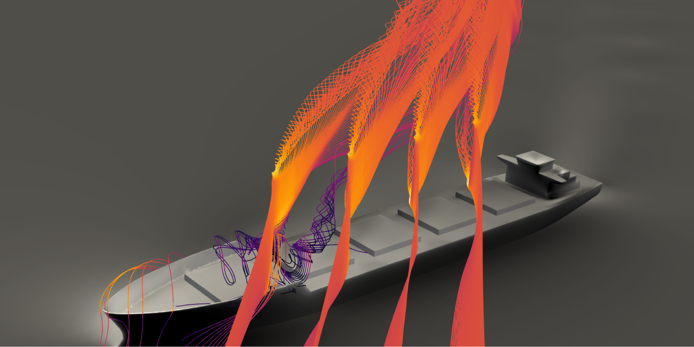
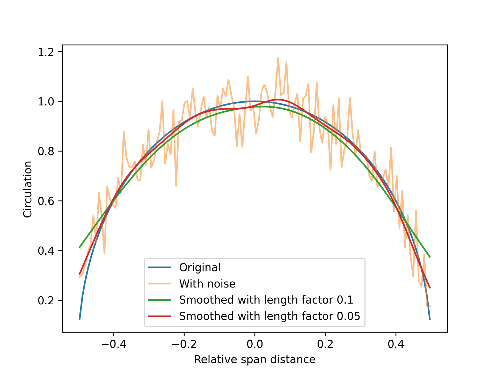
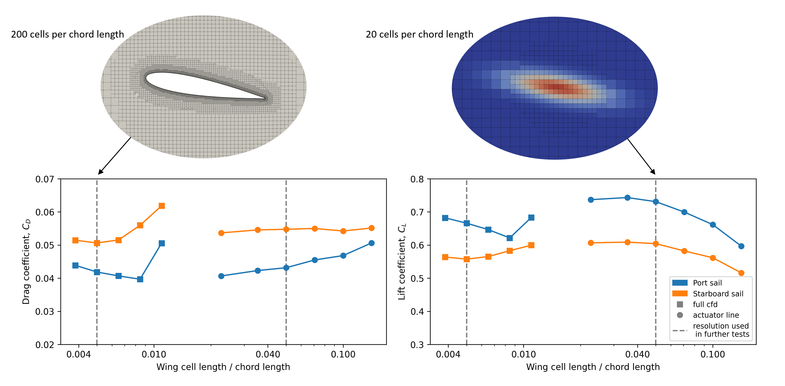
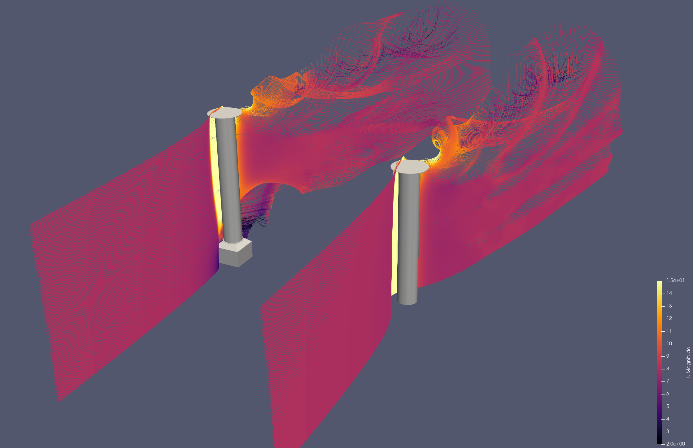

Introduction
Welcome to the Stormbird book!
Stormbird is a library for simulating lifting surfaces, e.g., wings, in a simplified way by representing them as line-models. Although this can be used for a variety of different cases, it is mostly developed to offer efficient modeling of modern wind propulsion devices. That is, the following types of lifting surfaces are of particular interest:
- Wing sails
- Rotor sails
- Suction sails
- Kites

To achieve practical modeling capabilities for these use cases, the following physical effects are assumed to be particularly important:
- Various lift generation mechanisms: modern sails have sections that range from classical foils, with and without flaps, rotating cylinders, and foils with boundary layer suction.
- Strong viscous effects: For all lift generating mechanisms above, there will be high lift coefficients with strong viscous effects on both the lift and drag forces. For instance, wing sails tend to be operated close to stall, the lift on a rotating cylinder is strongly affected by partial flow separation, and the lift on a suction sail is very dependent on the amount of boundary layer suction.
- Interaction effects between lifting surfaces: Many wind-powered ships have several sails placed in close proximity. Interaction effects between multiple sails can therefore be important.
- Interaction effects with other structures: Independent of the number of sails, there can be interaction effects between the sails and the rest of the ship, such as structures on deck or the part of the hull that is above the water line.
- Unsteady effects: Ship applications often require modeling of unsteady effects, for instance, to model seakeeping behavior or maneuvering. The sail forces are assumed to be important for such cases, which also introduces dynamic effects on the sails. In addition, kites are often flown dynamically to increase the power extracted from the wind.
At the same time, it is also often necessary that the computations are fast. The user will usually be interested in testing many different weather conditions, ship speeds, sail configurations, and operational variables. The goal is, therefore, to find the right balance between accuracy and speed for the intended use case. To achieve this, the library supports the following methods, that offer different levels of complexity and computational speed:
- Discrete static lifting line, for steady- or quasi-steady cases
- Discrete dynamic lifting line, for unsteady or steady cases with large wake deformations
- Actuator line, for steady and unsteady cases where interaction with other structures is of interest
The library is developed as part of the research project KSP WIND by the Department of Marine Technology at the Norwegian University of Science and Technology. The main developer is Jarle Vinje Kramer.
Who the Book is for
You should read this if you are interested in using Stormbird to run lifting line or actuator line simulations, or if you just want more information on the theory behind each method. The book is intended to introduce the theory, available models, and overall concepts in the implementation. In other words, the goal is to give a bird's-eye view of the library and its functionality. When appropriate, other literature will be referenced for more details. That is, it is written primarily for users, and is therefore not focused directly on the underlying source code. However, there will often be examples from the source code when that is the easiest way to illustrate functionality. For instance, data structures will often be shown directly as source code to illustrate what fields and settings that are available.
Don't forget to also look at the code!
The text in this book will not cover everything! It may also, at times, be outdated relative to the latest version of the library. The only way to get a full insight into the inner workings is, therefore, to look at the source code itself and the examples of how to use the code. Below are some relevant links for this purpose:
- The Stormbird GitHub page can be found here. It contains the core library, utility functionality, interfaces and examples.
- More specifically, examples of how to use the Python interface of the code can be found here.
- Automated code documentation can be found here for the core Stormbird library and here for the Stormath library, which contains mathematical utility functionality written for Stormbird.
Overview of different versions
Stormbird itself is a Rust library. The Rust programming language was chosen as it combines high computational speed with a modern user-friendly developer experience. One potential way to set up a Stormbird simulation is, therefore, to make a custom Rust executable. However, for those that don't know Rust, or just want to use the library in a high-level setting, it is also possible to use one of the high-level interfaces to the core functionality, listed below:
- The Python interface, implemented in the
pystormbirdmodule. This interface is a direct API to the necessary Rust functions and data structures for running lifting line simulations. This allows for scripting the setup and execution of simulations using Python. More information about the interface will often be mentioned throughout the rest of the book, as well as a high-level description that can be found here. - The Functional Mockup Interface, implemented in the
StormbirdLiftingLineFMU. This interface is more restricted in what it can do, relative to the Python interface, but serves as a practical way to execute sail simulations together with other FMU-models representing the ship. More information about the FMU-interface can be found here. - The OpenFOAM interface for running actuator line simulations with OpenFOAM as the CFD solver. More information about the OpenFOAM interface can be found here.
General about input and output
Stormbird, as any library, consists of many data structures. Some represent the settings for a simulation, such as wake and solver parameters, while others represent input to or result from a simulation. To create and run a simulation it is generally necessary to pass information to the library about the data structures that you wish to create. This is the case for all the interfaces.
To facilitate simple serialization and deserialization - at least from a coding perspective - Stormbird relies heavily on the Serde library. This is "[..] a framework for serializing and deserializing Rust data structures efficiently and generically". In other words, it is a library to automate the conversion of data structures to and from different file formats. Serde supports many formats, but JSON has been chosen for Stormbird. This means that any input must be passed as JSON strings, and output will often also be delivered as JSON strings.
Working with Stormbird is therefore often a matter of setting up the right input in a JSON format and then reading and parsing the output from the resulting JSON format.
Throughout this book there will be examples of data structures shown as Rust code. This is generally to show the available fields in a structure, to give an impression of which variables it is possible to set. All of these Rust-structures have a corresponding JSON representation. A simple example of how a generic Rust structure is converted to a JSON string from Serde is shown below.
An example of a Rust struct first:
#![allow(unused)] fn main() { pub struct SpatialVector { pub x: f64, pub y: f64, pub z: f64, } }
Then the corresponding JSON version with the input data
{
"x": 1.0,
"y": 0.0,
"z": 1.2
}
An example of a complete input string to Stormbird can be seen below. More explanations about this input will come later:
{
"line_force_model": {
"wing_builders": [
{
"section_points": [
{"x": 125.0, "y": 0.0, "z":-20.0},
{"x": 125.0, "y": 0.0, "z":-60.0}
],
"chord_vectors": [
{"x": -8.0, "y": 0.0, "z": 0.0},
{"x": -8.0, "y": 0.0, "z": 0.0}
],
"section_model": {
"SingleElementFoil": {}
}
},
{
"section_points": [
{"x": 45.0, "y": 0.0, "z": -20.0},
{"x": 45.0, "y": 0.0, "z": -60.0}
],
"chord_vectors": [
{"x": -8.0, "y": 0.0, "z": 0.0},
{"x": -8.0, "y": 0.0, "z": 0.0}
],
"section_model": {
"SingleElementFoil": {}
}
}
],
"nr_sections": 10
},
"simulation_settings": {
"Dynamic": {
"wake": {
"ratio_of_wake_affected_by_induced_velocities": 0.25
},
"solver": {
"Iterative": {
"damping_factor": 0.2,
"max_iterations_per_time_step": 3
}
}
}
}
}
Default values
Default values are often given for structures representing settings or models. This means that it may not be necessary to specify every field in a structure in the input. For instance, in the example above, the "wake" structure only has one specified variable. However, the complete wake structure has 13 fields, where some are other structures with more sub fields. The reason only the "ratio_of_wake_affected_by_induced_velocities" is given above is that this was the only setting where a different value than the default was wanted.
The goal is to implement reasonable default values on as many variables as possible.
Helper library to create the right JSON settings
Much of the setup of Stormbird models can be done using a Python library called stormbird_setup. This library is implemented independent of the core library, and should be useful for all interfaces. It makes different settings available as Python classes that inherit from the Pydantic BaseModel. This makes serializing of the data structures straightforward, and the setup of the models comes with typed check validation. That is, the only purpose of the library is to ease the generation of the right JSON strings, and can therefore be used no matter how stormbird is executed, and in combination with manually generated strings if that is needed. The library also implements some high-level shortcut-functionality for generating typical simulation settings for different cases. See the package folder on GitHub or the examples in the pyfoamsetup folder for more on how to use stormbird_setup.
Python interface
The Python interface to Stormbird is made using a Rust library called PyO3. As a general principle, there is a one-to-one relationship between the functionality available in Python and Rust equivalent functionality. That is, names are kept identical in both languages, and the programming constructs are kept as similar as possible (e.g., data structures in Rust become classes in Python, etc.)
Examples of how to use the Python functionality can be found in the pystormbird examples folder at the Stormbird github page.
Installation
To build and install the package, it is necessary to have a Rust compiler installed on your system as well as Python. With this in place, it should be as easy as a normal pip installation.
For instance, you can navigate to the pystormbird folder in a terminal and execute
pip install .
Still a lot of JSON input and output
Only a limited set of the Rust library has a direct Python interface. For instance, data structures that primarily contain input, and which are therefore not needed directly in a high-level interface (such as builder structures) do not have a direct implementation in pystormbird. It is generally seen as unnecessary as the same settings can be passed as JSON strings, which are then deserialized into the right structures on the Rust side. Avoiding a direct Python implementation drastically reduces the development overhead when, for instance, something changes in the core library.
As such, even when using the Python interface to Stormbird, the task is often to create and pass in the right formatted JSON strings to, for instance, initializer methods to create new objects. This is, however, fairly simple as Python has excellent support for converting dictionaries into JSON strings. In addition, the stormbird_setup library can ease the creation of JSON strings in most situations.
An example of how this works is shown below, where a multi-element foil model for a Stormbird simulation is created from input data that is set up as Python dictionaries, which are then converted to a JSON string:
import numpy as np
import json
from pystormbird.section_models import VaryingFoil
# Parameters for the model, representing the foil forces at different flap angles
flap_angles = np.radians([0, 5, 10, 15])
cl_zero_angle = np.array([0.0, 0.3454, 0.7450, 1.0352])
mean_stall_angle = np.radians([20.0, 19.0 , 17.8, 16.5])
cd_min = np.array([0.0101, 0.0154, 0.0328, 0.0542])
cd_second_order_factor = np.array([0.6, 0.9, 1.2, 1.5])
# Loop over the parameters to create individual foil models
foils_data = []
for i_flap in range(len(flap_angles)):
foils_data.append(
{
"cl_zero_angle": cl_zero_angle[i_flap],
"cd_min": cd_min[i_flap],
"cd_second_order_factor": cd_second_order_factor[i_flap],
"mean_positive_stall_angle": mean_stall_angle[i_flap],
"mean_negative_stall_angle": mean_stall_angle[i_flap]
}
)
# Collect the foil models into a "varying foil" model
foil_dict = {}
foil_dict["internal_state_data"] = flap_angles.tolist()
foil_dict["foils_data"] = foils_data
# Generate a JSON input string
input_str = json.dumps(foil_dict)
# Pass it to the Stormbird library
foil_model = VaryingFoil(input_str)
The same example with the stormbird_setup library would look like this:
import numpy as np
from pystormbird.section_models import VaryingFoil
# General structures for storing the right variables in a class
from stormbird_setup.section_models import Foil
# Change the name of the VaryingFoil class from stormbird_setup to avoid name clash
from stormbird_setup.section_models import VaryingFoil as VaryingFoilSetup
# Parameters for the model, representing the foil forces at different flap angles
flap_angles = np.radians([0, 5, 10, 15])
cl_zero_angle = np.array([0.0, 0.3454, 0.7450, 1.0352])
mean_stall_angle = np.radians([20.0, 19.0 , 17.8, 16.5])
cd_min = np.array([0.0101, 0.0154, 0.0328, 0.0542])
cd_second_order_factor = np.array([0.6, 0.9, 1.2, 1.5])
# Loop over the parameters to create individual foil models
foils_data = []
for i_flap in range(len(flap_angles)):
foils_data.append(
Foil(
cl_zero_angle = cl_zero_angle[i_flap],
cd_min = cd_min[i_flap],
cd_second_order_factor = cd_second_order_factor[i_flap],
mean_positive_stall_angle = mean_stall_angle[i_flap],
mean_negative_stall_angle = mean_stall_angle[i_flap]
)
)
# Collect the foil models into a "varying foil" model
varying_foil_setup = VaryingFoilSetup(
internal_state_data = flap_angles.tolist(),
foils_data = foils_data
)
# Pass it to the Stormbird library
foil_model = VaryingFoil(varying_foil_setup.to_json_string())
Functional Mockup Unit
The lifting line functionality in Stormbird is available as a Functional Mockup Unit, which means that the functionality can be executed through the Functional Mockup Interface standard. The actual interface is generated using the fmu_from_struct library, which is made by the same developer as Stormbird.
How to execute simulations using the FMU-version
The FMU-version is currently made to support version 2 of the FMI-standard. This choice is made because the developers of Stormbird primarily use the Open Simulation Platform for executing simulations, which currently only supports version 2. An FMU that supports version 3 of the FMI-standard is relatively straightforward to make, but will probably not be prioritized before the Open Simulation Platform is updated to the latest version.
A simulation can be executed with any simulation platform that supports the FMI-standard. One example is the command line interface from the Open Simulation Platform, or some Python interface to FMUs such as FMPy or PyFMI.
To actually set up a simulation, it is necessary to pass in several parameter- and input variables to the FMU unit. For a full overview of the available variables, see the FMU source code. To see how it can be used in practice, see the FMU example folder.
What can the FMU-version do?
The FMI-interface inherently comes with more limitations than a conventional API, such as the Python interface. For instance, there are limitations on what type of variables that can be passed to and from different FMUs, and there is a specific order to how functions are executed. Although there are many ways to work around these limitations, the FMU-version of Stormbird is, for simplicity's sake, designed to only cover the most typical use cases for running dynamic lifting line simulations. That is, it is not intended to be a direct alternative to the Python interface, but rather a specialized way to use some of the functionality.
To be more specific, there are essentially two primary use cases for the Stormbird FMU:
- Coupling of Stormbird to a time-domain ship simulator, such as VeSim. VeSim is a ship simulator that includes maneuvering and seakeeping models of ships. It can, for instance, simulate a ship moving in waves, including the effect of rudder action and control systems. The software is built around the FMI-standard to couple different sub-models together. Stormbird can, therefore, be one of many models in a ship-system simulation in the time-domain.
- Running sail simulations in hybrid experiments. Hybrid experiments are experiments where part of the physics is measured experimentally, while other parts are simulated. In the specific case of wind-powered ships, the aerodynamic forces on the sails are simulated while the hydrodynamics are tested in a towing tank. This article explains more of how this is done at SINTEF Ocean. The Stormbird FMU was designed to fit well with the laboratory software used at SINTEF Ocean when doing hybrid tests, called HLCC.
There is no direct coupling to VeSim or HLCC in the Stormbird FMU, but the choice of input and output variables was made, in part, based on what makes sense for these external software packages. That is, the design of the Stormbird FMU interface is not made in isolation.
OpenFOAM version
OpenFOAM is a general open source CFD solver, widely used both in academia and in industry.
The OpenFOAM version of Stormbird is currently the only way to run actuator line simulations. It consists of a volume force interface between the Stormbird library and the OpenFOAM library, that can be activated together with a solver in OpenFOAM. More details about this interface can be found both in the actuator line chapter and the specific chapter about the OpenFOAM interface.
As a general note, this interface could also serve as an inspiration for how to connect Stormbird to other CFD solvers, if this turns out to be relevant in the future.
Line model representation of wings
The fundamental building block of all the methods in Stormbird is a simplified line representation of the lifting surfaces. This means that the full geometry of the wings is reduced to multiple discrete line elements. Each line element represents a section of a lifting surface that has the following properties:
- A line segment geometry, represented as a start point and an end point, defining the location and orientation of the element. The line segment also has a control point, defined to be in the middle of the line segment. This point is used when computing local flow properties for the element during a simulation.
- A chord vector, which defines both the orientation and length of the chord. The orientation is relevant for computing the angle of attack as a function of the local velocity, while the length is relevant for computing the magnitude of the forces.
- A sectional model which is used to compute lift- and drag coefficients as a function of the local flow properties. The line model itself makes no assumptions about how the lift and drag is computed. However, Stormbird comes with a limited set of sectional models that are further described in Sectional models. Note: in the actual implementation, the section model is not actually stored for each line element, because most of the time, many elements will share the same sectional model. However, when iterating over line elements in the code there is a functionality to retrieve the relevant sectional model for that line element.
Structure overview
A view of source code that defines a line force model data structure can be seen below to illustrate what data is available. There are also multiple methods connected to this data structure not shown here. The construction of a line force model is generally not done manually, but rather by a builder.
#![allow(unused)] fn main() { pub struct LineForceModel { pub span_lines_local: Vec<SpanLine>, pub chord_vectors_local_not_rotated: Vec<SpatialVector>, pub chord_lengths: Vec<f64>, pub line_segment_is_virtual: Vec<bool>, pub section_models: Vec<SectionModel>, pub wing_indices: Vec<Range<usize>>, pub non_zero_circulation_at_ends: Vec<[bool; 2]>, pub density: f64, pub circulation_correction: CirculationCorrection, pub angle_of_attack_correction: AngleOfAttackCorrection, pub output_coordinate_system: CoordinateSystem, pub rigid_body_motion: RigidBodyMotion, pub local_wing_angles: Vec<f64>, pub chord_vectors_local: Vec<SpatialVector>, pub chord_vectors_global: Vec<SpatialVector>, pub chord_vectors_global_at_span_points: Vec<SpatialVector>, pub span_lines_global: Vec<SpanLine>, pub span_points_global: Vec<SpatialVector>, pub ctrl_points_global: Vec<SpatialVector>, pub ctrl_point_spanwise_distance: Vec<f64>, pub ctrl_point_spanwise_distance_non_dimensional: Vec<f64>, pub ctrl_point_spanwise_distance_circulation_model: Vec<f64>, pub input_power_models: Vec<InputPowerModel>, pub force_corrections: Vec<ForceCorrection>, pub added_mass: Vec<AddedMass>, pub gyroscopic_moments: Vec<GyroscopicMoment>, pub force_calculation_settings: ForceCalculationSettings, } }
More details on each field can be found in the code documentation. The construction of a line force model is generally not done with the structure directly, but rather through a builder.
Building a line model
As shown in the intro section, a line model consists of many line elements. To simplify the construction of this line model, Stormbird uses a line force model builder that helps with at least two things:
- Reduce the amount of input data: Rather than having to specify data directly for each line element, it is possible to only specify data at some chosen points along the span - such as the beginning and the end - and let the builder interpolate for every line segment between the specified points
- Automate the setup of multiple wings: The line force model requires information about which line element belongs to which wing. This can be cumbersome to set up manually, and it is not really necessary to do so. The builder automatically keeps track of which line element belongs to which wing.
Input data
The Rust definition of the builder structure looks like the following:
#![allow(unused)] fn main() { pub struct LineForceModelBuilder { pub wing_builders: Vec<WingBuilder>, pub nr_sections: usize, pub density: f64, pub circulation_correction: CirculationCorrectionBuilder, pub angle_of_attack_correction: AngleOfAttackCorrection, pub output_coordinate_system: CoordinateSystem, pub rotation_type: RotationType, pub local_wing_angles: Vec<f64>, pub rotation: SpatialVector, pub translation: SpatialVector, pub force_calculation_settings: ForceCalculationSettings, } }
The only required input is the vector containing WingBuilder structures and the nr_sections 1. The nr sections should be tested for each project, and will affect both the accuracy and the computational speed. Typical values range between 10-50. The density is set to the standard air density for 15 degrees Celsius by default (which = 1.225 kg / m^3).
The circulation_correction is an enum, where the default variant is None, and therefore not used by default. There will be more on the circulation corrections option later. This is only used in special circumstances, for instance when a pure lifting line simulation might fail due to numerical issues.
The angle_of_attack_correction is an enum with the variants None and GaussianSmoothing. The default is None. The GaussianSmoothing variant is not yet implemented, so this field should be left at its default value for now.
The output_coordinate_system is an enum that specifies how the forces and moments from the line force model should be calculated. The default is Global, which means all values are in a global coordinate system. That is, the coordinate system for the forces are not moved even if the wings are moved during a simulation. The other option is to set it to Body. In this case, the coordinate system of the forces will always follow the wings when they are moved.
The local_wing_angles, rotation, and translation specify the initial values for the local rotation of the wing angles as well as the global rotation and translation of the whole line force model. The rotation_type specifies the order of the rotations, where the default is XYZ. See the move line models chapter for more.
The force_calculation_settings controls details in how the forces on each line element are calculated. See the force calculations chapter for more.
Wing builder
A wing builder contains data to build line segments for a single wing. When a vector (or list) of wing builders is provided, the LineForceModelBuilder will automatically keep track of which line segment belongs to each wing. The fields in a WingBuilder structure are shown as Rust code below:
#![allow(unused)] fn main() { pub struct WingBuilder { pub section_points: Vec<SpatialVector>, pub chord_vectors: Vec<SpatialVector>, pub section_model: SectionModel, pub line_segment_is_virtual: Option<Vec<bool>>, pub non_zero_circulation_at_ends: [bool; 2], pub nr_sections: Option<usize>, pub input_power_model: InputPowerModel, pub internal_compartment_boundaries: Option<Vec<f64>>, pub force_correction: ForceCorrection, pub added_mass: AddedMass, pub gyroscopic_moment: GyroscopicMoment, } }
The input consists of a set of section_points which contain information about the span line position. The minimum number of section points is two, and the first has to start at one end of the wing, while the last must end up at the other. There can, however, also be more section points in between the ends.
For each section point, there also needs to be chord_vectors, which specify the local chord at the points. The chord_vectors give information about both chord length and orientation.
Each wing also needs a sectional model. The sectional model can differ between different wings given to the LineForceModelBuilder, which is useful for cases where different sail types are installed on the same ship (uncommon today, but might happen in the future).
The line_segment_is_virtual is an optional vector of boolean values, with one value for each segment between two consecutive section points. All line elements generated within a segment that is marked as true are treated as virtual. Virtual line elements are part of the simulation in the same way as other line elements, but they are not included in the integrated forces and moments. They can, for instance, be used to effectively increase the aspect ratio of a wing without adding more line elements to the force calculation. By default, no line elements are virtual.
The non_zero_circulation_at_ends consists of boolean values that specify the expected behavior of the circulation distribution at the ends of the wing. It is used when initializing the circulation distribution before a simulation, and when applying corrections to the circulation distribution. In most cases, the expected value of the circulation strength at the ends is zero, and the value of this variable should be [false, false]. However, if, for instance, the wing is standing directly on a symmetry plane, or is directly coupled to another wing, the circulation distribution will typically not be zero. If an end is coupled to something that might give a non-zero circulation, then that end should then get a true value. For instance, if the first end is standing on a symmetry plane, the value of this variable should be [true, false].
The nr_sections variable is optional but can be set for each wing to override the default parameters in the LineForceModelBuilder. Typically, it will not be used, as the most common scenario is to have the same number of sections for each wing.
The input_power_model specifies an optional empirical model for the power needed to operate the wing, for instance for rotor sails or suction sails. The default is FromSectionModelPowerCoefficient, which computes the power from the section model, and gives zero power for section models that do not need power. See the input power chapter for more.
The internal_compartment_boundaries is an optional division of the internal volume of the wing into sealed compartments, for instance for a suction sail with several fans along the span. The boundaries are given as non-dimensional span locations, running from -0.5 at one end of the wing to 0.5 at the other, including both ends. For instance, [-0.5, 0.0, 0.5] gives two compartments of equal length. The compartments are only used by section models with an internal flow model, and setting more than one compartment for other section models gives an error. The default is a single compartment. See the active air flow foil chapter for more.
The force_correction, added_mass and gyroscopic_moment are optional models that are applied to the forces on the wing, and are independent of the section model. They can be set separately for each wing, and are all turned off by default. See the force calculations chapter for more:
force_correction: empirical corrections of the forces, such as a correction of the lift-induced drag.added_mass: a strip theory model of the added mass forces.gyroscopic_moment: a model of the gyroscopic moment from a rotor sail. Can only be used together with the rotating cylinder section model.
When building a line force model from a wing builder, the wings are divided into multiple line segments based on the data in the WingBuilder structure. Each point in between the specified points are linearly interpolated 2.
Input to methods
In many cases, the methods in Stormbird will handle the actual building of the line force models automatically, using a builder structure as input. That is, the input to some function is often the builder and not the line force model itself. For instance, when setting up a lifting line simulation in Python, you only have to supply the builder data, and the line force model will be built automatically internally.
However, it is also possible to convert a builder into a line force model. This happens by calling the build() method, as usual for Rust builder structures.
-
The number of sections set in the
LineForceModelBuilderis used as default, except when another value is defined in theWingBuilderbelow. ↩ -
The interpolation method is possible to change or update to something that can handle non-linear changes between section points. This is, however, so far not prioritized as most sail types tend to use fairly simple geometrical structures. This might change in the future if there is a need to do so. ↩
Circulation strength
The circulation strength along a wing determines both the magnitude of the lift-forces and the induced velocities from the wing. The velocity is affected either through induced velocities from a wake model based on potential theory, in the case of lifting line simulations, or through body forces projected into a CFD domain, in the case of actuator line simulations.
This chapter specifies how the circulation strength is estimated from the local velocity on each line section, and how it is possible to modify the estimation for stability purposes. The procedure is the same for all simulation methods in Stormbird. That is, there are no differences in this regard between the static lifting line, dynamic lifting line or the actuator line. The responsibility for calculating the values are therefore given to the line force model.
Raw lifting line theory estimation
The calculation of the circulation strength on each line element follows the Kutta–Joukowski theorem. The mathematical definition of the circulation value, \( \Gamma \), on a line element is as follows, where \(U \) is the velocity, and \( L \) is the lift per unit span.
\[ \Gamma = L / (U \rho) \]
The lift per unit span is further computed from the sectional lift coefficient, \(C_L\) as follows, where \(\rho\) is the density and \(c \) the chord length:
\[ L = 0.5 \cdot \rho \cdot c \cdot C_L \cdot U^2 \]
When these equations are combined, we get the following equation for the circulation strength:
\[ \Gamma = 0.5 \cdot c \cdot C_L \cdot U \]
The actual source code looks like the following (the negative values are to account for directional definitions)
#![allow(unused)] fn main() { pub fn circulation_strength_raw( &self, angles_of_attack: &[f64], velocity: &[SpatialVector], ) -> Vec<f64> { let mut cl = self.lift_coefficients_pre_stall_with_stall_drop_off( angles_of_attack, velocity ); if self.force_calculation_settings.include_viscous_lift_in_the_circulation { let cl_viscous = self.lift_coefficients_post_stall_with_stall_weight(angles_of_attack); for i in 0..cl.len() { cl[i] += cl_viscous[i]; } } (0..velocity.len()).map(|index| { -0.5 * self.chord_lengths[index] * velocity[index].length() * cl[index] }).collect() } }
Note that, by default, only the pre-stall part of the lift coefficient from the sectional model is used to calculate the circulation strength. The post-stall part of the lift is instead treated as a separate viscous lift force, which does not affect the lift-induced velocities. This can be changed with the include_viscous_lift_in_the_circulation setting. See the force calculations chapter for more.
Optional corrections
Sometimes, there might be noise in the estimated circulation strength, which might cause instabilities and errors in the estimated forces. A typical example is lifting line simulations of stalled wings - especially when the lift coefficient is very large.
To handle such cases in a practical manner, there are optional corrections methods that can be used when estimating the circulation strength. These methods are controlled through a CirculationCorrection enum that is specified for the line force model. To set up different types of corrections, a CirculationCorrectionBuilder is used, which has the following structure:
#![allow(unused)] fn main() { pub enum CirculationCorrectionBuilder { None, Prescribed(PrescribedCirculation), Smoothing(CirculationSmoothingBuilder), } }
The default variant is None, which means that no corrections are applied. The effect of the other variants are explained below.
Smoothing
The smoothing correction applies different types of smoothing filters to the estimated circulation, controlled through the following structure:
#![allow(unused)] fn main() { pub struct CirculationSmoothingBuilder { pub smoothing_type: SmoothingTypeBuilder, pub prescribed_to_subtract_before_smoothing: Option<PrescribedCirculation>, } }
The option to add a prescribed_to_subtract_before_smoothing is currently experimental. It subtracts a prescribed circulation distribution (see more about this below) from the estimated circulation before applying the smoothing filter. After the smoothing is applied, the prescribed distribution is added back to the smoothed result. The idea behind this is that it can avoid issues with smoothing the rapidly changing circulation at the wing tips. By subtracting a known distribution first, the smoothing filter only needs to handle the more noisy part of the circulation distribution. However, this feature is still experimental, and should be used with care.
The smoothing_type field specifies which type of smoothing filter should be applied. The available options are shown below:
#![allow(unused)] fn main() { pub enum SmoothingTypeBuilder { Gaussian(GaussianSmoothingBuilder), CubicPolynomial(CubicPolynomialSmoothingBuilder), } }
The first smoothing type is Gaussian smoothing filter. The available fields are shown below:
#![allow(unused)] fn main() { pub struct GaussianSmoothingBuilder { pub smoothing_length_factor: f64, } }
The smoothing_length_factor gives a factor used to calculate the smoothing length from the span of each wing in the line force model. That is, if the value is set to 0.01, the smoothing length will be 1% of the total span of each wing, independent of the value of the wing span or the number of sections.
Before the smoothing is applied, additional points are inserted beyond the tips of the wings. Which values that are inserted beyond the tips are dependent on whether the circulation is expected to be zero or not, controlled by the non_zero_circulation_at_ends field in the line force model. If the circulation is expected to be zero, the additional points are set to zero. If not, the additional points are set equal to the value at the end of the wing. The number of insertion points is calculated automatically based on the smoothing length and the number of sections.
An example of how this smoothing method affects the circulation distribution is illustrated in the figure below. Note: the example is with an excessive amount of noise, and is not representative of actual numerical noise from a lifting line simulation. Rather, it shows an example where an artificial elliptic circulation distribution was first generated, and then modified by adding random numerical noise. The plot then shows how the noise is reduced when the noisy circulation distribution is corrected using the Gaussian smoothing filter, with different values for the smoothing_length_factor.

As can be seen, simple Gaussian smoothing introduces some errors towards the end of the wings if the smoothing length is too large, although the random noise is effectively reduced. It is therefore generally recommended to only apply as little smoothing as necessary to stabilize a solution.
The second smoothing type is a cubic polynomial smoothing filter, which assumes that a cubic polynomial can be fitted to the points with a certain window_size. The larger the window size, the more smoothing is applied. The available fields are shown below:
#![allow(unused)] fn main() { pub enum WindowSize { Five, Seven, Nine } pub struct CubicPolynomialSmoothingBuilder { pub window_size: WindowSize, } }
Prescribed distribution
Predetermined circulation distributions are a special mode where the circulation is forced to always follow a simple mathematical shape. For instance, it is possible to force the distribution to always be elliptical. This gives very stable simulations, and sometimes results that are very close to a full simulation. It is particularly useful if the goal is only to estimate interaction effects between wings, but where the lift and drag for a single wing is already known from, for instance, experimental or CFD results.
A view of the PrescribedCirculation structure:
#![allow(unused)] fn main() { pub struct PrescribedCirculationShape { pub inner_power: Float, pub outer_power: Float, } pub struct PrescribedCirculation { pub shape: PrescribedCirculationShape, pub curve_fit_shape_parameters: bool, } }
The option to curve_fit_shape_parameters is currently experimental. It will curve fit the shape parameters to the raw circulation distribution before applying the prescribed shape. However, it currently ends up with a relatively slow simulation, and the final results are not always better than just using default values for the shape parameters. It is set to false by default, and turning it on should be used with care and testing.
The PrescribedCirculationShape parameters in the structure are used to force the circulation to always follow a mathematical shape that looks like the equation below, where \(s\) is the local non-dimensional span distance, varying from -0.5 to 0.5 along each wing:
\[ \Gamma(s) = \Gamma_0 (1.0 - (2 s)^{\text{inner_power}})^{\text{outer_power}} \]
The default values are to set inner_power to 2.0 and outer_power to 0.5. This corresponds to an elliptic distribution.
Move and modify a line model
In dynamic simulations, it will often be interesting to apply motion to the sails and dynamically change the angle of attack or the internal state of the wings. This can, for instance, be done to simulate how the sails affect the seakeeping or maneuvering abilities of a ship or to allow the operational variables of the sails to be dependent on the current wind conditions. This chapter specifies how to apply motion data to the sails during a dynamic simulation and how to modify the operational variables for each sail.
Motion variables
The motion of a line force model is specified by the rigid_body_motion field, which is of the RigidBodyMotion type. This structure looks like the following:
#![allow(unused)] fn main() { pub struct RigidBodyMotion { pub translation: SpatialVector, pub rotation: SpatialVector, pub velocity_linear: SpatialVector, pub velocity_angular: SpatialVector, pub rotation_type: RotationType, } }
It specifies translation and rotation, both in terms of the current positions and in terms of the velocities at any given time. The position is important both for updating the wake shape and for determining local wind conditions on each line segment. When applying the motion variables, the rotation will be applied first, then the translation. That is, the rotation happens around a local coordinate system always. The order of the rotation can be set with the rotation_type field, but the default is rotation in x first, then y, and then z.
The motion velocities, velocity_linear and velocity_angular, are important for the calculation of forces. The forces on each line segment are primarily dependent on the local velocity, local angle of attack, and the internal state of the sectional models. As such, when a motion is applied to the line force model, it is necessary to calculate the felt velocity and felt acceleration of each line segment, so that this can further be used as input to the force calculation functions. This can be calculated from the global rotation and translation velocity vectors using methods in the RigidBodyMotion structure. As will be further highlighted later, the forces are estimated from a SectionalForcesInput structure, which has fields as shown in the code block below. The velocity and acceleration values calculated in the SectionalForcesInput structure are dependent on the motion of the sails.
#![allow(unused)] fn main() { pub struct SectionalForcesInput { pub circulation_strength: Vec<f64>, pub velocity: Vec<SpatialVector>, pub angles_of_attack: Vec<f64>, pub section_models_internal_state: Vec<f64>, pub acceleration: Vec<SpatialVector>, pub rotation_velocity: SpatialVector, pub coordinate_system: CoordinateSystem, } }
Each element in the vectors in the SectionalForcesInput corresponds to a line element in the LineForceModel. Both the velocity and the acceleration are a combination of freestream conditions, induced velocities, and motion velocities.
The section_models_internal_state is the internal state given to the section model on each line element, which is converted from the internal state set on the wing (see the control variables below). For some section models, the conversion depends on the local velocity, which means that the motion can also affect the section internal states. For instance, the spin ratio of a rotor sail with a constant rotational speed changes when the felt velocity changes, and the suction coefficient of a suction sail with a constant fan power varies with the local flow conditions. The motion velocities can either be automatically calculated based on finite difference and the time history of the motion or set manually if the variables are available from some other sources (e.g., a rigid body solver of a ship).
Control variables
Two types of control variables exist for the sails in a LineForceModel.
The first is the local_wing_angles, which defines the rotation of the sails around its local axis. The local axis is defined as the axis of the first span line. If the sail is defined to be oriented in the z-direction as the span direction, a local wing angle value will then rotate all chord vectors around the z-axis.
The second is the internal state of each wing. This value can represent different things, depending on the sail type and how it is modeled. Typical values are flap angles, rotational speeds, fan power, and suction coefficients. The internal state of the wing is converted to the internal state of the section model on each line element, which can be different. For instance, the internal state of a rotor sail wing is the revolutions per second, while the section model uses the spin ratio. The internal state can also be constant along the span, which is the most common, or vary along the span. See the section model chapter for more on what the internal state means for each section model, and how it varies along the span.
Updating the LineForceModel
When setting new values for either the motion variables or the control variables it is important to do it in a way that also updates all dependent internal variables. For instance, many of the variables that define the geometry of the wings are defined both with their local values and their global values (e.g., chord_vectors_local and chord_vectors_global). In general, the global version of a variable type is calculated from the local one, with the motion and wing angles applied to them. As such, updating the line force model should be done with set methods that also update the global representation of the line force model.
The line force model has a general update function that should update all global geometry variables, and which should also be called after all set methods.
Motions
Motion can be set in two ways: either with the position and rotation only, and using finite difference to calculate the corresponding velocities due to this motion, or by updating the velocity values manually. The first option is generally the easiest. However, the latter might be useful in cases where motion velocity is available from an external source, such as a rigid body solver that integrates the acceleration of an entire ship.
Below are some examples of how to apply different motion variables through the Python interface.
import numpy as np
from pystormbird.lifting_line import Simulation
# ----- code to set up the simulation first, which includes the line force model -----
simulation = Simulation(setup_string)
translation = [1.0, 2.0, 3.0]
rotation = np.radians([10.0, 0.0, 0.0]).tolist()
time_step = 0.1
# Update the translation and rotation with the velocity set by finite difference
simulation.set_translation_and_rotation_with_finite_difference_for_the_velocity(
time_step = time_step,
translation = translation,
rotation = rotation
)
# Alternatively, update everything manually
simulation.set_translation_only(translation)
simulation.set_rotation_only(rotation)
linear_velocity = [8.0, 0.0, 0.0]
angular_velocity = np.radians([0.0, 10.0, 0.0]).tolist()
simulation.set_velocity_linear(linear_velocity)
simulation.set_velocity_angular(angular_velocity)
Local chord angle control
Updating the chord angles in the Python interface is done by a set-method that takes a list of angles as input, that must have a length equal to the number of wings in the line force model. An example code snippet is shown below, for a case with three sails:
import numpy as np
# some code to set up the simulation, as above
simulation.set_local_wing_angles(
np.radians([40.0, 35.0, 30.0]).tolist()
)
Update the internal state
The internal state of the wings can be updated with a set method, similar to how the local wing angles can be updated. The input is a list with one value per wing, which sets an internal state that is constant along the span of each wing. This is the most common case, and is shown in the code example below for three sails with a flap angle as the internal state:
import numpy as np
# some code to set up the simulation, as above
simulation.set_internal_state(
np.radians([10, 12.5, 15]).tolist()
)
An internal state that varies along the span is set for one wing at a time. There are two functions for this, corresponding to the two ways of giving a span variation. The locations along the span are non-dimensional, running from -0.5 at one end of the wing to 0.5 at the other:
# A flap angle that varies linearly from 10 degrees at one end of the first wing to 20 degrees at
# the other end
simulation.set_internal_state_linear(
wing_index = 0,
locations = [-0.5, 0.5],
values = np.radians([10.0, 20.0]).tolist()
)
# A suction sail with two internal compartments, with the boundary in the middle of the span.
# Using the same boundaries as the compartments gives one value per compartment, which, for
# instance, can be the rotational speed of the fan in each compartment
simulation.set_internal_state_piecewise_constant(
wing_index = 1,
boundaries = [-0.5, 0.0, 0.5],
values = [15.0, 20.0]
)
The internal compartments in the last example are part of the geometry of the wing, and are set when building the line force model, through the internal_compartment_boundaries in the wing builder. They can not be changed during a simulation. See the active air flow foil chapter for more on how the internal state is applied to each compartment.
The current internal state of each wing can be read with the internal_state function, which returns one value per wing. For a wing with an internal state that varies along the span, the value is the mean over the span.
In Rust, the corresponding functions on the LineForceModel are set_internal_state, for constant values for all wings, and set_wing_internal_state or set_internal_state_span_variation, for setting the internal state of a single wing as a WingInternalState or a SpanVariation. Unlike the motion and the local wing angles, the internal state does not affect the geometry of the wings, so no update of the global geometry is needed after setting it.
Note: if a controller is used, it sets a constant internal state for all wings each time it updates, which overwrites internal states that are set manually, including those that vary along the span.
Force calculations
An important job for the line force model is to compute forces on each line element, as a function of the local flow variables. The results from these calculations are available in the result-structures from a simulation. A view of the result structure is shown as Rust code below. There is also a Python interface to this structure where the same fields are available.
#![allow(unused)] fn main() { pub struct SimulationResult { pub time: f64, pub ctrl_points: Vec<SpatialVector>, pub solver_input_ctrl_points_velocity: Vec<SpatialVector>, pub force_input: SectionalForcesInput, pub sectional_forces: SectionalForces, pub integrated_forces: Vec<IntegratedValues>, pub integrated_moments: Vec<IntegratedValues>, pub input_power: Vec<f64>, pub iterations: usize, pub residual: f64, pub wing_indices: Vec<Range<usize>>, pub rigid_body_motion: RigidBodyMotion, } }
Sectional vs integrated
The forces on a line force model are specified both as sectional values and as integrated values. As the name suggests, the sectional forces are forces acting on each individual section in the line force model. That is, the force acting on a single line element. The integrated forces and moments are the sum of sectional forces for each wing in the line force model. That is, the length of the integrated forces and moments vectors will be equal to the number of wings. Line elements that are marked as virtual in the wing builder are not included in the integrated values.
Force types
There are four different force types in Stormbird, together with a gyroscopic moment, which are estimated from different methods. Each has a dedicated section below. The circulation forces, the viscous lift and the sectional drag are computed from the section models, while the added mass and the gyroscopic moment are computed from models that are set for each wing in the wing builder. Empirical corrections of the forces are described in the force corrections section.
1 - Circulation forces
The first, and usually most important, force component is the force that arises from the circulation on each line segment. The circulation strength is estimated directly from the local velocity and sectional model, as described here. The direction of the force is always normal to the local velocity.
The resulting force from the circulation strength is therefore just the "lift" on each line segment, but in the coordinate system of the local flow. Due to the presence of induced velocities, the sectional lift may cause both lift and drag relative to the incoming free stream. Circulation forces are, in other words, the combination of lift and lift-induced drag from the simulation.
2 - Viscous lift
The sectional models for foils divide the lift coefficient into a pre-stall part and a post-stall part, as explained in the foil model chapter. By default, only the pre-stall part is used when calculating the circulation strength. The post-stall part is instead calculated as a separate force, labeled viscous lift, which acts normal to the local velocity, but which does not affect the lift-induced velocities. This force type is always zero for the rotating cylinder model.
Whether the post-stall lift should be included in the circulation instead is controlled by the ForceCalculationSettings structure, which is set in the line force model builder:
#![allow(unused)] fn main() { pub struct ForceCalculationSettings { pub include_viscous_lift_in_the_circulation: bool } }
The default value is false. If it is set to true, the post-stall lift is included in the circulation strength, and the viscous lift force will always be zero.
3 - Sectional drag
Sectional drag is, usually1, the viscous drag on each line segment. It is calculated directly from the drag function in the sectional model. The direction is always parallel to the local flow.
The sectional drag also includes the drag from the lift-induced drag correction, if it is used.
4 - Added mass
Added mass forces are the forces that are proportional to the acceleration of the flow relative to the wing. They are computed with a strip theory model, set with the added_mass field in the wing builder:
#![allow(unused)] fn main() { pub struct AddedMass { pub normal_coefficient: f64, pub chordwise_coefficient: f64, } }
The added mass of each line element is given relative to a reference mass, which is the added mass of a flat plate accelerating normal to its chord in two-dimensional potential flow:
\[ m_{ref} = \rho \frac{\pi c^2}{4} \Delta s \]
where \( \rho \) is the density, \( c \) is the chord length and \( \Delta s \) is the length of the line element. The acceleration along the span line is removed, and the remaining part is divided in a part normal to the chord, \( \mathbf{a}_n \), and a part along the chord, \( \mathbf{a}_c \). The added mass force is then:
\[ \mathbf{F}_{added \, mass} = m_{ref} \left( C_{n} \mathbf{a}_n + C_{c} \mathbf{a}_c \right) \]
where \( C_n \) is normal_coefficient and \( C_c \) is chordwise_coefficient. The acceleration is the felt acceleration of the flow, meaning that it is opposite to the acceleration of the wing, if the wing is moving in still air.
Both coefficients are zero by default, which means that the model is not used. Recommended values, based on two-dimensional potential flow theory, are given below:
| Case | normal_coefficient | chordwise_coefficient |
|---|---|---|
| Thin foil, e.g., a single element wing sail | 1.0 | 0.0 |
| Thick foil, with thickness ratio \( t / c \) | 1.0 | \( (t / c)^2 \) |
| Rotating cylinder, i.e., a rotor sail | 1.0 | 1.0 |
The values for the thick foil are exact for an elliptical section, and are a good approximation for other foil shapes. For instance, a foil with a thickness ratio of 18% gets a chordwise coefficient of 0.03, which can usually be neglected. For a rotating cylinder, the chord length is the diameter, so the reference mass is the mass of the displaced fluid, and the force is the same for acceleration in all directions normal to the span line. For multi-element foils, the chord length should be the total chord length of all the elements.
The model is a strip theory, where each line element is treated as a two-dimensional section. The real added mass of a wing with a finite span is lower, in particular close to the tips and for wings with a low aspect ratio. This is not corrected for automatically, but can be accounted for by reducing the coefficients.
5 - Gyroscopic moment
The gyroscopic moment is only applicable to rotor sails. It is the moment due to gyroscopic precession, when the spinning rotor is rotated by the motion of the ship, for instance in roll or pitch. It is computed with a model that is set with the gyroscopic_moment field in the wing builder:
#![allow(unused)] fn main() { pub struct GyroscopicMoment { pub moment_of_inertia: f64, } }
The moment_of_inertia is the total moment of inertia of the rotor about its axis of rotation, in kg m^2. It is zero by default, which means that the model is not used. The model can only be used together with the rotating cylinder section model, as the internal state of the wing is then the revolutions per second of the rotor, \( n \). Setting a non-zero moment of inertia for other section models gives an error.
The angular momentum of the rotor is \( \mathbf{L} = I \, 2 \pi n \, \mathbf{e} \), where \( I \) is the moment of inertia and \( \mathbf{e} \) is the direction of the span line. The rotational speed of the rotor is assumed to be much larger than the rotational velocity of the line force model, \( \boldsymbol{\Omega} \), which gives the moment from the rotor on its supports:
\[ \mathbf{M}_{gyroscopic} = \mathbf{L} \times \boldsymbol{\Omega} \]
The moment is distributed over the line elements in proportion to their length, so that a span varying internal state is taken into account. Virtual line elements get no moment. The gyroscopic effect is a pure moment, and is therefore not part of the forces. It is instead added directly to the integrated moments, see the force results structures section below.
The moment of inertia should include all the rotating parts, i.e., the cylinder and the end disk. If it is not known from the manufacturer, it can be estimated from the mass and the radius of the parts. A thin-walled cylinder with mass \( m \) and radius \( R \) has a moment of inertia of \( m R^2 \), while a uniform disk has \( m R^2 / 2 \).
Force corrections
The lifting line and actuator line methods are simplified models of the flow around the wings, and the results may need to be adjusted to fit experimental data or high-fidelity simulations. Empirical corrections of the forces can therefore be set for each wing, through the force_correction field in the wing builder:
#![allow(unused)] fn main() { pub struct ForceCorrection { pub lift_induced_drag_correction: f64, } }
All corrections are zero by default, which means that they are not used. More corrections may be added to this structure in the future.
Lift-induced drag correction
The lift-induced drag correction adds a drag force to each line element, with a drag coefficient that is proportional to the square of the lift coefficient:
\[ \Delta C_D = k_{i} C_L^2 \]
where \( k_i \) is lift_induced_drag_correction. The lift coefficient is computed from the total lift force on the line element, i.e., the sum of the circulation force and the viscous lift. The drag force is parallel to the local velocity, and is included in the sectional drag. The correction is applied after the circulation strength is computed, and does therefore not affect the lift or the induced velocities.
A positive value increases the drag, while a negative value decreases it. As the lift-induced drag of a wing is approximately \( C_L^2 / (\pi A) \), where \( A \) is the aspect ratio, the correction can be thought of as a change in the effective aspect ratio of the wing. To get the lift-induced drag of a wing with an effective aspect ratio of \( A_{eff} \) rather than \( A \), the factor should approximately be:
\[ k_i = \frac{1}{\pi A_{eff}} - \frac{1}{\pi A} \]
The value must be used with care, as a negative value can give a negative total drag if it is too large.
Virtual line segments
Virtual line segments can also be used to alter the forces in a way that is similar to the lift-induced drag correction. A virtual segment at the end of a wing makes the wing effectively longer in the simulation, while the forces on the virtual segment are not included in the integrated forces. This increases the effective aspect ratio of the wing, for instance to model the effect of an end plate, or of a wing standing close to the deck of a ship. As the circulation is then non-zero at the end of the real part of the wing, the lift also increases slightly, and the lift-induced drag is reduced.
The two methods therefore largely do the same thing, but there are some differences:
- Virtual line segments only work one way. They can increase the effective aspect ratio, and thereby reduce the lift-induced drag, but they can not increase the drag. The lift-induced drag correction is the only way to increase the drag.
- Virtual line segments affect the circulation distribution, and therefore also the lift and the interaction with other wings, while the lift-induced drag correction only affects the drag.
- Virtual line segments add more line elements to the simulation, which increases the computational cost, while the lift-induced drag correction is practically free.
Force results structures
To allow for a comparison between the force types - for instance in debugging situations - each force type is stored separately, in addition to the total force / moment. The structures used to store this data are shown below:
#![allow(unused)] fn main() { pub struct SectionalForces { pub circulatory: Vec<SpatialVector>, pub viscous_lift: Vec<SpatialVector>, pub sectional_drag: Vec<SpatialVector>, pub added_mass: Vec<SpatialVector>, pub gyroscopic_moment: Vec<SpatialVector>, pub total: Vec<SpatialVector>, pub coordinate_system: CoordinateSystem, } }
The gyroscopic_moment is the moment from each line element, and is not included in the total force.
#![allow(unused)] fn main() { pub struct IntegratedValues { pub circulatory: SpatialVector, pub viscous_lift: SpatialVector, pub sectional_drag: SpatialVector, pub added_mass: SpatialVector, pub gyroscopic: SpatialVector, pub total: SpatialVector, } }
The integrated moments are computed as the sum of the cross product between the control point and the sectional force on each line element, with the gyroscopic moment added directly. The gyroscopic field is therefore always zero for the integrated forces.
-
It is perfectly fine to include more than the viscous drag in the sectional drag model, if, for instance, it is necessary to add some empirical corrections to the total drag estimate. What exactly the sectional drag represents from a purely physical point of view must be decided on when setting up the model by the user. ↩
Input power
Some sail types, like rotor sails and suction sails, require input power to operate. This is modeled empirically in Stormbird, with a model that is specified for each wing. The structures that control these models are shown below.
#![allow(unused)] fn main() { pub struct InputPowerData { pub internal_state_data: Vec<Float>, pub input_power_data: Vec<Float>, } pub enum InputPowerModel { FromSectionModelPowerCoefficient, NoPower, DirectFromInternalState, InterpolateFromInternalState(InputPowerData), } }
The different variants work as follows:
FromSectionModelPowerCoefficient: The power is calculated by the section model. For most section models, this is the power coefficient on each line element, integrated over the wing: \( P = \sum_i C_{P, i} \, 0.5 \rho A_i U_i^3 \). Section models that do not need power, such as regular foils, have a power coefficient of zero. Some section models compute the power for the whole wing directly, such as an active air flow foil with fan curves. This is the default, and is the recommended choice in most cases, as it keeps the power model together with the rest of the section model.NoPower: The wing does not need power at all. This gives the same result as the default for section models without power, but can be used to explicitly turn off the power calculation for a wing.DirectFromInternalState: The absolute value of the internal state of the wing is used directly as the power. This is a simple solution for, for instance, suction sails where the internal state is the power. If the internal state varies along the span, it is interpreted as power per span length, and the absolute value is integrated over the span.InterpolateFromInternalState: The power is interpolated from the data inInputPowerData, as a function of the absolute value of the internal state of the wing. This can, for instance, be used to model the power of a rotor sail directly as a function of the revolutions per second. If the internal state varies along the span, the mean of the absolute value over the span is used.
For the active air flow foil with a power based internal state conversion, the default model will give the same power as the DirectFromInternalState variant, as the power coefficient of the section model is computed to be consistent with the power given as the internal state. When the fans are modeled with fan curves, the internal state is the rotational speed of the fans, and the default model gives the power from the fan curves.
Section models
The primary purpose of the sectional models is to compute non-dimensional lift and drag as a function of the local flow velocity at each line element. That is, they are two-dimensional models which are used together with the chord vector and local flow velocity to compute the total force on each line section. In both lifting line and actuator line simulations, three-dimensional effects are modeled by altering the effective velocity experienced by these two-dimensional models.
Different sectional models are necessary for different sail types. This is handled by implementing the sectional model as an enum, with a definition as shown below:
#![allow(unused)] fn main() { pub enum SectionModel { SingleElementFoil(Foil), MultiElementFoil(VaryingFoil), ActiveAirFlowFoil(ActiveAirFlowFoil), RotatingCylinder(RotatingCylinder), EffectiveWindSensor, } }
The variants use four different underlying models, which each have their own sub-chapter for more details. A short overview is given below:
SingleElementFoiluses theFoilmodel, which represents a single element foil profile. It is suitable for modelling single element wing sails.MultiElementFoiluses theVaryingFoilmodel, which extends theFoilmodel to allow the output to be dependent on an internal state. The internal state is typically a flap angle, for a two-element foil, or a combination of multiple element configurations, for instance to model a three-element foil.ActiveAirFlowFoiluses theActiveAirFlowFoilmodel, which is intended for foils with active flow control, such as suction sails. It also uses aVaryingFoilmodel for the lift and drag, but adds a conversion between the internal state set on the wing, such as the fan power, and the internal state used by the foil model, such as the suction coefficient.RotatingCylinderuses theRotatingCylindermodel, which represents a cylinder where the rotational speed can be varied to alter the force output. This is intended to be used to model rotor sails.EffectiveWindSensoris a special model without any input parameters that always gives zero lift and drag. A wing with this model therefore does not produce any forces, but can be used to measure the effective wind velocity at its control points.
More sectional models can be added in the future. The only requirement is that each model must be able to compute the necessary force coefficients. However, the goal is to cover most use cases with the current models.
Internal states
All wings in a line force model have an internal state, which can be set for each wing, for instance by a controller. What the internal state means depends on the section model:
SingleElementFoilandEffectiveWindSensor: the internal state is not used.MultiElementFoil: the internal state is passed directly to theVaryingFoilmodel, and is typically the flap angle.ActiveAirFlowFoil: the internal state is either the power, the rotational speed of the fans, or the suction coefficient, depending on the settings of the model. It is converted to the internal state of theVaryingFoilmodel on each line element. See the active air flow foil chapter for more.RotatingCylinder: the internal state is the revolutions per second of the cylinder, which is converted to a spin ratio on each line element, using the local chord length (i.e., the diameter) and the local velocity.
This means that the internal state given to the section model on each line element can be different from the internal state set on the wing. The conversion is managed by the line force model structure, and is not something the user needs to think about when running a simulation. However, it is important to know which units the internal state is given in when setting up the models and the controller.
Constant and span varying internal states
In most cases, the internal state is a single number for each wing, which is the same along the whole span. However, it is also possible to give an internal state that varies along the span, for instance to model a sail with several fans along the span, or a flap angle that varies along the span. The internal state of a wing is therefore represented by the following enums:
#![allow(unused)] fn main() { pub enum WingInternalState { Constant(f64), SpanVarying(SpanVariation), } pub enum SpanVariation { Linear { locations: Vec<f64>, values: Vec<f64> }, PiecewiseConstant { boundaries: Vec<f64>, values: Vec<f64> }, } }
The locations along the span are given as non-dimensional span positions, running from -0.5 at one end of the wing to 0.5 at the other. The span variation does not have to match the resolution of the line elements. There are two ways to give the variation:
Linear: The value is linearly interpolated between the given locations, and is constant outside of them.PiecewiseConstant: The value is constant within zones along the span, defined by the boundaries between them. There must be one more boundary than values.
For each line element, the value of the span variation at the control point is used. The exception is section models where the internal state applies to a part of the wing rather than to a single line element, such as an active air flow foil with several internal compartments. The value is then averaged or integrated over each part of the wing, which is done exactly, without depending on the resolution of the line elements.
When a single number is needed to represent a span varying internal state, for instance as the current state in the controller, the mean value over the span is used. See the chapter on how to move and modify a line model for how to set the internal state, both as constant values and as span variations.
Since the models are handled through an enum, they may also require different inputs in their own functions for calculating lift and drag. For instance, the foil models require the angle of attack as input, while the RotatingCylinder only uses the spin ratio. Again, the right input is managed by the line force model structure.
Power coefficient
In addition to lift and drag, each section model can compute a power coefficient, which is used to estimate the power needed to operate the sail. The power coefficient is defined as:
\[ C_P = \frac{P}{0.5 \rho A U^3} \]
where \( P \) is the power, \( \rho \) is the density, \( A \) is the area of the line element and \( U \) is the local velocity. Models that do not need power, such as regular foils, return zero.
The power for a whole wing is computed by the section model, and is used by the default input power model. For most section models, this is simply the power coefficient integrated over the wing:
\[ P_{wing} = \sum_i C_{P, i} \, 0.5 \rho A_i U_i^3 \]
However, some models need information about the whole wing to compute the power. For instance, for an active air flow foil where the fans are modeled with fan curves, the efficiency of the fans depends on the total volume flow through the wing. The power is then computed directly for the whole wing, rather than through the power coefficient on each line element.
To get an overview of how to set up the different variants, see the sub-chapters for each model.
Foil model
The Foil structure is a parametric model of a single element foil section. That is, it is defined using (relatively) few parameters that are later used in a simple mathematical model to compute lift and drag for arbitrary angles of attack.
Why a parametric model?
Other implementations of lifting line and actuator line methods often use data based models for computing the lift and drag coefficients. That is, the user must supply data on how the lift and drag varies as a function of the angle of attack, and then the solver can use this data together with interpolation or table look-up to compute force coefficients for arbitrary angles.
A data based approach is often fine, and does have some benefits. For instance, it is the only way to make a truly general model where the user has full control over the behavior of the sectional model. For this reason, there might be implementations of pure data based models in Stormbird in the future. However, the choice of using a parametric model for now was based on three reasons.
First, it becomes easier to use a parametric model as a building block for more complex foil models, where the behavior depends on some internal state, such as flap angle or suction rate. This is because the model parameters can be allowed to depend on the internal state through interpolation. See the varying foil sub chapter for more on this.
Second, a parametric model ensures smoothness, which is beneficial when using the model together with gradient based optimization algorithms. For instance, such a method might be used to optimize the angle of attack for wing sails at a given wind direction. The smoothness is in particular practical when the expected optimal point is close to the stall angle - which it often is.
Third, tuning a parametric model is generally believed to be easier than a data based model. For instance, let's say you want to adjust the exact stall characteristics of a 2D model, to make a simplified lifting line model better fit with high-fidelity experimental data; this would not be straightforward with a data based model, but should be fairly easy if the parametric model of the lift has good parameters to control the stall behavior.
The downside of a parametric model is believed to be small, as long as the model can represent typical foil section behavior without too many simplifications. The design of the Foil model is intended to achieve this as best as possible1.
Model overview
The model is divided in two core sub-models, labeled pre-stall and post-stall, respectively representing the behavior before and after the foil has stalled due to too high angle of attack.
For angles of attack below stall, it is assumed that both lift and drag can be represented accurately with simple functions. The lift is linear by default, but the slope can optionally be reduced above a given angle of attack. This is meant to capture separation that develops gradually before the full stall, for instance on the flap of a multi-element foil, or at low Reynolds numbers. See the pre-stall lift section below. The drag is assumed to be represented as a second order polynomial, with the minimum value at the angle where the linear part of the lift is zero. See the pre-stall drag section below. For a wing sail operating below stall, the drag will mostly be dominated by lift-induced drag forces. The viscous drag can therefore be kept simple, as the importance to the total force is relatively low.
For angles of attack above stall, both the lift and drag are assumed to be harmonic functions which primarily are adjusted by setting the max value after stall. This is a rough model which might not be perfect for all angles of attack, but is assumed to be close enough. A rough and approximate model for the post-stall behavior is assumed to be OK as wing sails and suction sails will most often operate below stall.
The transit between the two models is done using a sigmoid function, where both the transition point and the width of the transition can be adjusted. See the stall model section below.
The model only describes the two-dimensional, steady lift and drag of the section. Effects that are set for the whole wing, such as added mass and empirical corrections of the lift-induced drag, are part of the line force model instead, as described in the force calculations chapter.
An interactive plot at the end of this chapter can be used to explore how the parameters affect the output of the model.
Available parameters
A view of the available fields in the Foil model is seen below, with further explanation of each parameter right after:
#![allow(unused)] fn main() { pub struct Foil { pub cl_zero_angle: f64, pub cl_initial_slope: f64, pub cl_slope_reduction_factor_positive: f64, pub cl_slope_reduction_factor_negative: f64, pub cl_slope_reduction_onset_angle_positive: f64, pub cl_slope_reduction_onset_angle_negative: f64, pub cl_slope_reduction_range: f64, pub cl_max_after_stall: f64, pub cd_min: f64, pub cd_second_order_factor: f64, pub cd_max_after_stall: f64, pub cd_power_after_stall: f64, pub mean_positive_stall_angle: f64, pub mean_negative_stall_angle: f64, pub stall_range: f64, } }
An explanation of the parameters is given below:
-
cl_zero_angle: Lift coefficient at zero angle of attack. This is zero by default, but can be set to a non-zero value to account for camber, flap angle or boundary layer suction/blowing. -
cl_initial_slope: How fast the lift coefficient increases with angle of attack, when the angle of attack is small. The default value is \( 2 \pi \) , which should always be the value used for a normal foil profile - with or without camber and flap - but it can also be set to a different value for instance to account for boundary layer suction/blowing. -
cl_slope_reduction_factor_positive/negative: Optional reduction of the lift slope for positive or negative angles of attack, as described in the pre-stall lift section below. A value of 0.0 means no reduction, while 1.0 means that the slope is reduced to zero. Is zero by default, and therefore not used. -
cl_slope_reduction_onset_angle_positive/negative: The angle of attack where the slope reduction is half-way developed, for positive or negative angles of attack. Both are given as positive values. The default value is 10 degrees. Only used if the corresponding reduction factor is different from zero. -
cl_slope_reduction_range: The range of the transition to the reduced lift slope, with the same definition as thestall_range. Shared by the positive and negative side. The default value is 6 degrees. -
cl_max_after_stall: The maximum lift coefficient after stall. -
cd_min: Minimum drag coefficient, which is reached at the angle where the linear part of the lift is zero. -
cd_second_order_factor: Factor to give the drag coefficient a second order term, as described in the pre-stall drag section below. This is zero by default. -
cd_max_after_stall: The maximum drag coefficient after stall. -
cd_power_after_stall: Power factor for the harmonic dependency of the drag coefficient after stall. Set to 1.6 by default. -
mean_positive_stall_angle: The mean stall angle for positive angles of attack, which is the mean angle where the model transitions from pre-stall to post-stall behavior. The default value is 20 degrees. -
mean_negative_stall_angle: The mean stall angle for negative angles of attack, which is the mean angle where the model transitions from pre-stall to post-stall behavior. The default value is 20 degrees. -
stall_range: The range of the stall transition, as described in the stall model section below. The default value is 6 degrees.
Pre-stall lift
The pre-stall lift consists of a linear part and an optional reduction of the lift slope. The linear part is given as:
\[ C_{L, linear} = C_{L, 0} + a \sin(\alpha) \]
where \( C_{L, 0} \) is cl_zero_angle and \( a \) is cl_initial_slope. The sine of the angle of attack is used rather than the angle itself, which is practically the same for small angles, but makes the lift periodic for large angles.
Slope reduction
Many foils have a lift curve where the slope is gradually reduced before the full stall. This can, for instance, be due to the flow separating on the flap of a multi-element foil much earlier than on the main element, or due to a slowly developing trailing edge separation at low Reynolds numbers. The result is a reduction in the lift slope, without the drop in lift that comes with the full stall.
This is modeled by letting the slope of the lift, with respect to \( x = \sin(\alpha) \), be reduced by sigmoid functions:
\[ \frac{d C_{L, pre-stall}}{dx} = a \left( 1 - r_+ \sigma_+(x) - r_- \sigma_-(-x) \right) \]
where \( r_+ \) and \( r_- \) are cl_slope_reduction_factor_positive and cl_slope_reduction_factor_negative. The sigmoid function is the same as the one used in the stall model:
\[ \sigma(x) = \frac{1}{1 + e^{-k (x - x_{0})}}, \quad k = \frac{4.595}{\Delta_r}, \quad x_{0} = \sin(\alpha_{r}) \]
where \( \alpha_r \) is the onset angle, given by cl_slope_reduction_onset_angle_positive or cl_slope_reduction_onset_angle_negative, and \( \Delta_r \) is cl_slope_reduction_range. With this definition, the sigmoid function is 0.01 at \( x_0 - \Delta_r \), 0.5 at \( x_0 \) and 0.99 at \( x_0 + \Delta_r \). That is, the onset angle is where the slope is half-way reduced.
The pre-stall lift is found by integrating the slope from zero angle of attack:
\[ C_{L, pre-stall} = C_{L, linear} - a \, r_+ R_+(x) + a \, r_- R_-(-x) \]
where \( R(x) \) is the integral of the sigmoid function, which can be computed exactly:
\[ R(x) = \int_0^x \sigma(t) \, dt = \frac{1}{k} \left[ \ln \left( 1 + e^{k (x - x_0)} \right) - \ln \left( 1 + e^{-k x_0} \right) \right] \]
The model has the following properties:
- Well below the onset angle, the lift is equal to the linear lift. Well above the onset angle, the slope is \( a (1 - r) \). A reduction factor of 1.0 therefore gives a constant lift above the onset angle.
- The lift at zero angle of attack is always equal to
cl_zero_angle, regardless of the slope reduction. - The reductions for the positive and negative side are both included for all angles of attack, rather than switching between them based on the sign of the angle. The positive reduction is negligible for negative angles, and vice versa, but this ensures that the lift curve is smooth also at zero angle of attack, when the positive and negative parameters are different.
- The onset angle and the range are effectively defined in terms of \( \sin(\alpha) \) rather than \( \alpha \). This makes the reduction factor exact, but means that the range is slightly different from the range in radians. The difference is small for typical angles: \( \sin(20^\circ) = 0.342 \), while \( 20^\circ = 0.349 \) radians.
- The slope reduction is not part of the linear lift, and therefore does not affect the angle where the minimum drag occurs, as described in the pre-stall drag section.
The slope reduction is meant to be used together with the stall model, which reduces the pre-stall lift further as the foil stalls. The onset angle should therefore typically be lower than the mean stall angle.
Pre-stall drag
The pre-stall drag is modeled as a second order polynomial, where the minimum drag is assumed to occur when the lift is zero. The zero-lift angle is found from the linear part of the lift, \( C_{L, linear} \), as defined in the pre-stall lift section, so that the drag model automatically follows any changes in the zero-lift angle due to camber, flap angle or boundary layer suction. The pre-stall drag is given as:
\[ C_{D, pre-stall} = C_{D, min} + k_{D} \left( \frac{C_{L, linear}}{a} \right)^2 \]
where \( C_{D, min} \) is cd_min and \( k_D \) is cd_second_order_factor. The lift is divided by the initial slope so that the term inside the parenthesis is approximately the angle of attack relative to the zero-lift angle, in radians. A foil without camber therefore gets a drag that varies with \( \sin^2(\alpha) \approx \alpha^2 \). The slope reduction in the lift is not included, as the purpose is only to find where the minimum drag occurs. If cl_initial_slope is zero, the zero-lift angle is undefined, and \( \sin(\alpha) \) is used instead.
Note that this is a simplification, as the minimum drag does not necessarily occur exactly at zero lift. However, it removes the need to tune the location of the minimum drag separately for each camber, flap angle or suction rate.
Stall model
Amount of stall
The transition from pre-stall to post-stall behavior is controlled by the amount of stall, \( s \), which varies smoothly from 0, meaning no stall, to 1, meaning full stall. It is computed with a sigmoid function of the absolute value of the angle of attack:
\[ s(\alpha) = \frac{1}{1 + e^{-k_s (|\alpha| - \alpha_s)}}, \quad k_s = \frac{4.595}{\Delta_s} \]
where \( \Delta_s \) is stall_range and \( \alpha_s \) is the mean stall angle, given by mean_positive_stall_angle for positive angles of attack and mean_negative_stall_angle for negative angles of attack. Both stall angles are given as positive values. The amount of stall is 0.01 at \( |\alpha| = \alpha_s - \Delta_s \), 0.5 at the mean stall angle, and 0.99 at \( |\alpha| = \alpha_s + \Delta_s \). The full transition therefore takes place over an interval of \( 2 \Delta_s \) around the mean stall angle.
Note that the stall angles are measured from zero angle of attack, and not from the zero-lift angle. For a foil with camber, flap or suction, the stall angles for positive and negative angles of attack will therefore typically be different.
Lift
The total lift coefficient is a weighted sum of the pre-stall and post-stall lift:
\[ C_L = (1 - s) \, C_{L, pre-stall} + s \, C_{L, max} \sin(2 \alpha) \]
where \( C_{L, pre-stall} \) is described in the pre-stall lift section and \( C_{L, max} \) is cl_max_after_stall. The post-stall lift has its maximum value at 45 degrees, and is zero at 90 degrees, which is a typical behavior for a fully stalled foil, similar to a flat plate.
Drag
The post-stall drag is given as:
\[ C_{D, post-stall} = C_{D, max} |\sin(\alpha)|^{p} \]
where \( C_{D, max} \) is cd_max_after_stall and \( p \) is cd_power_after_stall. The maximum drag is therefore reached at 90 degrees.
The total drag coefficient uses the same amount of stall as the lift:
\[ C_D = (1 - s) \, C_{D, pre-stall} + s \, C_{D, post-stall} \]
where \( C_{D, pre-stall} \) is described in the pre-stall drag section.
Interactive example
The plot below shows the output of the foil model, and can be used to explore how the parameters affect the lift and drag. The parameters are adjusted with the sliders, or by typing in values, below the plot. The angles are given in degrees in the sliders, but must be given in radians in the actual input to Stormbird. The current parameters can be copied as JSON input, with angles in radians, from the bottom of the plot.
The thin gray lines show the pre-stall and post-stall models before they are combined using the amount of stall. The lowest panel shows the amount of stall, \( s \).
The plot uses a JavaScript copy of the Rust implementation of the Foil model, which can be found in book/src/sectional_models/interactive/foil_model.js.
-
The design of the
Foilmodel is open for changes, and may be updated when a need is discovered. The goal is to find the right balance between simplicity and flexibility. ↩
Varying foil model
The VaryingFoil structure is a model of a foil where the output can be allowed to depend on some internal state. The typical example is a flap angle, for a two-element foil, or suction rate, for a suction sail. To achieve this, the varying foil model uses multiple Foil models, each belonging to a specific internal value. Linear interpolation is used for all Foil model parameters for each state between the input data.
The VaryingFoil model is used by two of the variants in the section model enum: the MultiElementFoil variant uses it directly, while the ActiveAirFlowFoil variant uses it together with a conversion of the internal state. See the active air flow foil chapter for more on the latter.
How to set up a VaryingFoil structure
As a general case, you need to tune several Foil models for multiple values of whatever you want to use as an internal state of the wing. If this is a flap angle, you would need data for the lift and drag coefficients as a function of angles of attack for multiple discrete flap angles. When a unique model is generated for each value of the flap angle, this can be given as input to the VaryingFoil structure, along with the flap angle data as internal_state_data. See the example at the end of this chapter.
What if I want to model a three-element foil?
More complex models with more internal variables might be added in the future. This will be done when the use case presents itself, and likely not before. However, it is still possible to use the VaryingFoil structure to model sails with more control parameters in a slightly simplified way.
For instance, let's assume you want to model a three-element foil, where there is both a flap and a leading edge slot. Currently it is not possible to model changing values of the slot- and flap-angle independently directly in Stormbird. However, if you assume some relationship between the flap angle and the slot angle, the VaryingFoil structure can still be used.
This might not be such a large simplification for practical use cases1. The point of a multi-element foil is both to create larger maximum lift forces and to reduce the drag force for a given lift force. In a lifting line model - and also mostly for wings in general - the lift-induced velocities are not very affected by how the lift is created. Rather, it is just the value of the lift-coefficient that matters. For a given wanted lift coefficient it seems reasonable that there is always a single optimum combination of flap- and slot-angle, which probably can be computed independently of three-dimensional effects. As such, reducing the model to a single internal variable might not be a big problem.
Available parameters
The available parameters in the structure are shown below.
#![allow(unused)] fn main() { pub struct VaryingFoil { pub internal_state_data: Vec<f64>, pub foils_data: Vec<Foil>, } }
The internal_state_data and foils_data must have the same length, where each Foil model belongs to the internal state value with the same index. The internal_state_data must be strictly increasing, and contain at least one value. This is checked when the model is set up.
For an internal state between two values in the data, all the parameters of the Foil model are linearly interpolated between the two neighboring foils. Outside the range of the data, the first or last foil is used, without extrapolation.
Positive and negative internal states
The internal state can also be negative. This is, for instance, used to switch the direction of a flap or the suction side of a suction sail. There are two ways to give the data for negative internal states:
- One-sided data: If the
internal_state_dataonly contains values with one sign, e.g., only positive values, the foil is assumed to be symmetric with respect to the sign of the internal state. An internal state with the opposite sign then gives the mirrored foil at the absolute value of the internal state. That is, the data only has to be given for one direction of the flap or suction. Zero counts as positive, so data starting at zero is also one-sided. - Two-sided data: If the
internal_state_datacontains both positive and negative values, the data is used directly for all internal states, without any mirroring. This can be used if the foil is not symmetric, for instance, for a cambered main element with a flap that can be deflected to both sides.
The mirrored foil is the same foil profile with the suction side and the pressure side swapped, which means that the lift and drag satisfy:
\[ C_{L, mirrored}(\alpha) = -C_L(-\alpha), \quad C_{D, mirrored}(\alpha) = C_D(-\alpha) \]
For the foil model, this is achieved exactly by changing the sign of cl_zero_angle, and swapping all parameters that are given separately for positive and negative angles of attack, i.e., the stall angles and the parameters for the lift slope reduction. The other parameters are already symmetric with respect to the angle of attack, and are not changed.
There are no requirements on which values the one-sided data must contain. For instance, it is possible to give data for a single flap angle only, which is then used for all positive internal states, while the mirrored foil is used for all negative internal states. This is practical when the sail is only operated with a fixed flap angle to either side. If the behavior for small internal states is important, the data should include an internal state of zero, with a foil that is symmetric, i.e., with cl_zero_angle equal to zero and the same parameters for positive and negative angles of attack. Otherwise, the foil changes abruptly when the internal state changes sign.
An example of one-sided data for a two-element wing sail, where the flap angle is given in radians, is shown below. A negative flap angle of, for instance, -15 degrees gives the mirror image of the foil at 15 degrees, with a cl_zero_angle of -1.0 and a mean_negative_stall_angle of 17.5 degrees.
{
"MultiElementFoil": {
"internal_state_data": [0.0, 0.5236],
"foils_data": [
{ "cl_zero_angle": 0.0, "cd_min": 0.01 },
{ "cl_zero_angle": 2.0, "cd_min": 0.01, "mean_positive_stall_angle": 0.2618 }
]
}
}
-
This is currently a hypothesis which we hope to be able to explore more in the future... ↩
Active air flow foil
NOTE: THIS CHAPTER IS A DRAFT. THE MODEL IS NEW, AND BOTH THE MODEL AND THE TEXT MIGHT CHANGE.
The ActiveAirFlowFoil structure is a model of a foil with active flow control, where the main intended use case is to model suction sails. On a suction sail, air is sucked into the foil through a porous surface on the suction side, using one or more fans. This keeps the boundary layer attached at higher angles of attack, which allows much larger lift coefficients than for a regular foil.
The model consists of two parts:
- A
VaryingFoilmodel, which gives the lift and drag as a function of the angle of attack and an internal state, such as the suction coefficient. - An internal state conversion, which defines how the internal state set on the wing is converted to the internal state used by the
VaryingFoilmodel on each line element.
The reason for the second part is that the most practical way to control a suction sail is often not the same as the variable that the lift and drag depend on. For instance, a suction sail is controlled by the power or the rotational speed of the fans, while the lift and drag are better described as a function of the suction coefficient. The conversion between these depends on the local flow conditions, and can therefore vary along the span of the wing.
#![allow(unused)] fn main() { pub struct ActiveAirFlowFoil { pub varying_foil: VaryingFoil, pub internal_state_conversion: InternalStateConversion, } pub enum InternalStateConversion { SuctionCoefficientDirect, PowerToPowerCoefficient, PowerToInternalFlow { internal_flow: InternalFlow, fan_efficiency: f64, }, FanSpeedToInternalFlow { internal_flow: InternalFlow, fan: Fan, }, } }
Internal state conversions
There are four different ways to convert the internal state, which have different levels of complexity. An important point to note is that the meaning of the internal_state_data in the VaryingFoil model depends on which conversion is used.
SuctionCoefficientDirect: The internal state of the wing is the suction coefficient, which is given directly to theVaryingFoilmodel on all line elements. The foil data must therefore be given as a function of the suction coefficient. This variant is mostly useful for testing, as it does not say anything about how much power is needed. The power is therefore set to zero.PowerToPowerCoefficient: The internal state of the wing is the power. The power is converted to a power coefficient on each line element, which is given to theVaryingFoilmodel. The foil data must therefore be given as a function of the power coefficient. This is a simplified model, which is useful when data for the lift and drag is available as a function of the power coefficient, as for the TurboSail data.PowerToInternalFlow: The internal state of the wing is the input power to the fans. The power is converted to a suction coefficient on each line element, using a model of the internal flow in the sail and a constant fan efficiency. The foil data must therefore be given as a function of the suction coefficient. This is expected to be the most used model, and is described in more detail below.FanSpeedToInternalFlow: The internal state of the wing is the rotational speed of the fans, in revolutions per second. The suction coefficient on each line element is found from the same internal flow model, but the fans are modeled with fan curves rather than a constant efficiency. This is the most complete model, intended for cases where data for the fans is available. It is described in the fan model section below.
The suction coefficient, \( C_Q \), and the power coefficient, \( C_P \), are defined as:
\[ C_Q = \frac{Q}{U A}, \quad C_P = \frac{P}{0.5 \rho A U^3} \]
where \( Q \) is the volume flow through the porous surface, \( P \) is the power, \( \rho \) is the density, \( A \) is the area and \( U \) is the velocity. In Stormbird, the area and velocity are always the local values on each line element, where the area is the chord length times the length of the line element. It is important that the data for the VaryingFoil model uses the same definitions.
For the PowerToPowerCoefficient conversion, the power is distributed over the line elements proportional to their area. The power coefficient on each line element then becomes:
\[ C_{P, i} = \frac{P}{0.5 \rho A_{wing} U_i^3} \]
where \( A_{wing} \) is the total area of the wing and \( U_i \) is the local velocity.
The direction of the suction
The internal state of the wing can be both positive and negative for all conversions. The sign of the internal state is used to set the direction of the suction, i.e., which side of the foil is the suction side. The magnitude of the power, rotational speed or suction coefficient is given by the absolute value of the internal state. That is, setting a negative power does not mean that the fan produces power, but that the same amount of power is used to suck air in on the other side of the foil. The sign is kept in the internal state given to the VaryingFoil model, which should therefore contain mirrored foil data for the negative values.
Span varying internal states
The internal state of the wing can also vary along the span. For the power based conversions, a span varying internal state is interpreted as power per span length. For the PowerToPowerCoefficient conversion, the power on each line element is then the local power per span length times the length of the line element, and the power coefficient becomes:
\[ C_{P, i} = \frac{p'(y_i)}{0.5 \rho c_i U_i^3} \]
where \( p'(y_i) \) is the power per span length at the control point and \( c_i \) is the chord length. For the conversions with an internal flow model, the internal state is applied to each internal compartment, as described below.
The internal flow model
The PowerToInternalFlow and FanSpeedToInternalFlow conversions use a simplified model of the flow through the porous surface of the sail. The model is based on a pressure balance between the outside and the inside of the sail, and the following assumptions:
- All line elements in the same internal compartment share the same internal volume, with a uniform internal pressure. By default, the whole wing is a single compartment.
- The external pressure on the porous surface depends only on the suction coefficient, and not on the angle of attack or the lift.
- The pressure loss through the porous surface is proportional to the velocity through the surface squared.
The input parameters to the model are shown below. The model only describes the flow through the porous surface. The fans are part of the internal state conversion.
#![allow(unused)] fn main() { pub struct InternalFlow { pub cp_no_suction: f64, pub cp_suction_gradient: f64, pub loss_coefficient: f64, pub porous_fraction: f64, pub solver_settings: InternalFlowSolverSettings, } }
External pressure
The external pressure coefficient on the porous surface is modeled as a linear function of the suction coefficient:
\[ C_{p, ext} = C_{p, 0} + \frac{d C_p}{d C_Q} C_Q \]
where \( C_{p, 0} \) is the pressure coefficient without suction, given by cp_no_suction, and \( d C_p / d C_Q \) is given by cp_suction_gradient. Since the porous surface is on the suction side, both values will typically be negative. That is, the external pressure on the porous surface gets lower when the suction increases. The gradient must be zero or negative, which is checked when the model is set up. The reason for this requirement is explained below.
Why the pressure depends on the suction coefficient
The external pressure is modeled as a function of the suction coefficient only, and not of the angle of attack or the lift coefficient. The reasoning behind this choice is as follows:
- The porous surface is typically located on the aft part of the suction side, where the flow would separate without suction.
- The part of the pressure distribution that is caused by the angle of attack is concentrated close to the leading edge. In thin airfoil theory, the loading due to the angle of attack is proportional to \( \sqrt{(1 - x) / x} \), where \( x \) is the non-dimensional chordwise position, which goes to zero at the trailing edge. A change in the angle of attack therefore mainly changes the suction peak at the leading edge, and has less effect on the pressure on the aft part of the foil.
- The suction, on the other hand, acts more like a change in camber, or a virtual flap, similar to how lift is controlled on circulation control airfoils. The suction controls how far the flow stays attached around the aft part of the foil. Without suction, the pressure on the porous surface is close to the base pressure of the separated flow. When the suction increases, the flow stays attached further around the aft part, and the pressure on the porous surface becomes much lower. The lift increases as a consequence, so the lift and the external pressure are correlated, but it is the suction that is the cause.
This is also consistent with pressure distributions for foils with boundary layer suction, where the pressure on the aft part of the suction side varies much more with the suction rate than with the angle of attack.
The model is still a simplification. The angle of attack will have some effect on the external pressure, especially close to and beyond the maximum lift for a given suction coefficient. The flow then separates upstream of the porous surface, and the pressure increases towards the base pressure. This is not captured by the model. The dependency on the suction coefficient is also likely to be nonlinear in reality, for instance by leveling off when the flow is fully attached, so the linear function should be seen as an approximation that is valid over a limited range of suction coefficients. The parameters depend on the geometry of the sail and the location of the porous surface, and must be tuned to experimental or CFD data.
A practical consequence of the choice is that the internal flow model does not depend on the VaryingFoil model. The suction coefficient on each line element can therefore be computed directly, as explained below, without an iteration between the internal flow model and the lift and drag model.
Flow through the porous surface
The fans create an internal suction, \( s \), which is the difference between the ambient pressure and the internal pressure in the sail. The pressure difference over the porous surface is then:
\[ \Delta p = C_{p, ext} \, 0.5 \rho U^2 + s \]
The flow through the surface is driven by this pressure difference, and is modelled using a loss coefficient, \( K \), given by loss_coefficient:
\[ Q = \phi A \sqrt{\frac{2 \Delta p}{\rho K}} \]
where \( \phi \) is the fraction of the area that is porous, given by porous_fraction. Both the porous fraction and the loss coefficient must be larger than zero. Note that only the ratio \( \phi / \sqrt{K} \) matters for the flow. The intention is that the porous fraction is set based on the geometry of the sail, while the loss coefficient is tuned to match experimental or CFD data.
The suction coefficient on each line element
The internal suction is uniform within an internal compartment, but the local velocity varies along the span, for instance due to the lift-induced velocities or a vertical wind gradient. It is therefore practical to use the non-dimensional internal suction for each line element, \( \sigma = s / (0.5 \rho U^2) \), which varies along the span. Combining the equations above, with \( Q = C_Q U A \), gives a quadratic equation for the suction coefficient on each line element:
\[ \frac{K}{\phi^2} C_Q^2 - \frac{d C_p}{d C_Q} C_Q - \left( C_{p, 0} + \sigma \right) = 0 \]
When the gradient is zero or negative, the equation has exactly one positive solution when \( C_{p, 0} + \sigma \) is positive, and no positive solution otherwise. The suction coefficient is therefore computed directly from the solution of the equation, without any iterations. The suction coefficient also increases monotonically with the internal suction, which makes the solution for the internal suction of the whole wing, described below, robust. With a positive gradient, the equation could have two positive solutions or none, which is the reason why this is not allowed.
The suction coefficient is lower on line elements with a high local velocity, as the same internal suction gives a lower value of \( \sigma \). A negative gradient acts as a negative feedback on the flow: more suction gives a lower external pressure, which counteracts the internal suction and reduces the pressure difference that drives the flow into the sail. The suction coefficient for a given value of \( \sigma \) is therefore lower than without the gradient. This feedback is also the reason why the solution is unique.
If the internal suction is too small to overcome the external suction, i.e., if \( C_{p, 0} + \sigma \) is negative, the pressure difference becomes negative, which in reality means that air flows out of the sail. Since the sign of the internal state is used for the direction of the suction, such outflow is not represented in Stormbird. Line elements with outflow are instead assumed to have zero flow.
Power with a constant fan efficiency
The power delivered to the flow is the internal suction times the total volume flow over the wing. For the PowerToInternalFlow conversion, the input power to the fans is found by dividing by a constant fan efficiency, \( \eta \), given by fan_efficiency:
\[ P = \frac{s \sum_i Q_i}{\eta} \]
The default value of the fan efficiency is 1.0.
Fan model
The FanSpeedToInternalFlow conversion replaces the constant fan efficiency with a model of the fans, based on fan curves. The fan curves give the pressure rise over a fan, \( \Delta p_{fan} \), and the input power to the fan, \( P_{fan} \), as a function of the volume flow and the rotational speed. The model is set up with the following structures:
#![allow(unused)] fn main() { pub struct Fan { pub curves: FanCurves, pub number_of_fans: usize, // Default: 1 pub duct_loss_coefficient: f64, // Default: 0.0 } pub enum FanCurves { Dimensional { reference_rotational_speed: f64, reference_density: f64, data: FanCurveData, }, NonDimensional { diameter: f64, data: FanCurveData, }, } pub struct FanCurveData { pub flow_data: Vec<f64>, pub pressure_data: Vec<f64>, pub power_data: Vec<f64>, } }
Fan curves
The fan curves can be given in two ways, depending on what data is available:
Dimensional: The data is given as volume flow in m³/s, pressure rise in Pa and power in W, measured at a reference rotational speed, \( n_{ref} \), and density, \( \rho_{ref} \). This is typically the format used in data sheets from fan manufacturers.NonDimensional: The data is given as the flow coefficient, the pressure coefficient and the power coefficient, using the diameter of the fan, \( D \), and the rotational speed in revolutions per second, \( n \):
\[ \phi_{fan} = \frac{Q}{n D^3}, \quad \psi_{fan} = \frac{\Delta p_{fan}}{\rho n^2 D^2}, \quad \lambda_{fan} = \frac{P_{fan}}{\rho n^3 D^5} \]
In both cases, the curves are scaled to other rotational speeds and densities using the fan affinity laws, which state that the flow scales with \( n \), the pressure rise with \( \rho n^2 \) and the power with \( \rho n^3 \). For the non-dimensional curves, this scaling is built into the definition of the coefficients. For the dimensional curves, the scaling is done relative to the reference values.
The data must only cover the stable operating range of the fan, where the pressure rise decreases with increasing flow. Many fans have a region at low flow where this is not the case, which can give multiple possible operating points. This is checked when the model is set up, and data that does not satisfy this requirement is not accepted. Below the lowest flow in the data, the first data point is used. Above the highest flow, the curves are extrapolated linearly.
Multiple fans and duct losses
The number_of_fans field specifies the number of identical fans in parallel, which share the total volume flow equally. The duct_loss_coefficient, \( k \), can be used to model the pressure loss in the ducts between the internal volume of the sail and the fans, as a function of the total volume flow:
\[ \Delta p_{duct} = k \left( \sum_i Q_i \right)^2 \]
Operating point
For a given rotational speed, the operating point of the fans is where the pressure rise over the fans balances the internal suction and the duct losses, at the total volume flow through the porous surface:
\[ \Delta p_{fan} \left(\sum_i Q_i(s), n \right) = s + \Delta p_{duct} \]
The total volume flow increases with increasing internal suction, while the pressure rise over the fans decreases with increasing flow. There is therefore only one operating point. If the fans can not overcome the external suction on any of the line elements, there is no flow. When the operating point is found, the input power is given directly by the power curve of the fans. The efficiency of the fans is therefore a result of the model, rather than an input.
Internal compartments
Most suction sails have a single fan, and a single internal volume. However, some have several fans along the span, where the internal volume is divided into separate compartments by bulkheads. This can be modeled by dividing the wing into internal compartments, through the internal_compartment_boundaries field in the wing builder. The compartments are defined on the wing, rather than in the section model, as they are a property of the layout of the wing, while the section model describes the flow through the porous surface and the type of fan.
Each compartment is modeled as sealed from the others, with its own uniform internal pressure and its own fans. That is, each compartment is solved separately, in the same way as a whole wing with a single compartment. A line element belongs to the compartment that contains its control point. If a compartment boundary does not match the boundary between two line elements, the effective boundary will therefore be shifted to the closest line element boundary.
The internal state of the wing is applied to each compartment as follows:
PowerToInternalFlow: A constant internal state is the total power for the wing, which is divided equally between the compartments. A span varying internal state is the power per span length, which is integrated over each compartment to give the power for the compartment.FanSpeedToInternalFlow: The rotational speed of the fans in each compartment is the mean value of the internal state over the compartment. A constant internal state therefore gives the same rotational speed for all fans. All compartments use the same fan model.
The sign of the internal state sets the direction of the suction for each compartment separately. A PiecewiseConstant span variation with the same boundaries as the compartments gives exactly one value per compartment, which is the most natural way to set the power or rotational speed of each fan individually.
Note that, since the internal pressure is uniform within a compartment, it is only the total power for each compartment that matters for the PowerToInternalFlow conversion. A variation of the power per span length within a compartment does not affect the result, as the distribution of the flow, and therefore the power, along the span is given by the internal flow model.
Virtual line elements
Virtual line elements, for instance used to model end plates, get the same type of internal state as the rest of the wing. For instance, they get the suction coefficient that follows from the internal suction in the compartment they belong to. This keeps the circulation on the virtual line elements consistent with the rest of the wing. However, virtual line elements are not part of the sail itself, and are therefore not included in the flow through the sail or in the power.
Solving for the internal suction
The internal suction is not known directly, and must be found from the internal state of the wing, for each compartment. For a given internal suction, the suction coefficient on each line element is found directly, as described above. The total volume flow through the compartment, and therefore the power, is a nonlinear function of the internal suction, which means that a solver is needed:
- For the
PowerToInternalFlowconversion, the internal suction is the value where the power equals the power given as the internal state of the wing, found with the secant method. - For the
FanSpeedToInternalFlowconversion, the internal suction is given by the operating point of the fans, found with Brent's method. Brent's method always keeps the solution within a bracket, which is known in this case: the internal suction is always between the value where the flow into the sail starts and the maximum pressure rise of the fans.
The settings for the solver can be set through the solver_settings field, but the default values should normally be sufficient:
#![allow(unused)] fn main() { pub struct InternalFlowSolverSettings { pub wing_tolerance: f64, // Default: 1e-6, relative pub wing_max_iterations: usize, // Default: 50 } }
Note that the internal flow model is still coupled to the rest of the lifting line or actuator line simulation through the local velocity. The suction coefficient affects the lift, which affects the induced velocities, which again affect the local velocity, and therefore the suction coefficient. This coupling is handled by the iterations in the simulation, in the same way as for all other section models.
Power consumption and control
The power needed to operate the sail is computed by the section model for the whole wing, as described in the section model overview. For the power based conversions, this is done by integrating a power coefficient over the wing, which means that the default input power model gives the same power as the internal state of the wing. For the FanSpeedToInternalFlow conversion, the efficiency of the fans depends on the operating point in each compartment. The power is therefore computed from the power curve of the fans, using the volume flow and the rotational speed in each compartment, and summed over the compartments.
The controller can be used to set the internal state of a suction sail in two ways. Either the set points can be given directly as the wing internal state, i.e., as the power or the rotational speed of the fans, or they can be given in the units of the section model, i.e., as the suction or power coefficient. In the latter case, the set points are converted to the wing internal state based on the measured velocity on the wing, assuming the same suction or power coefficient along the whole span. Since the internal flow model does not depend on the angle of attack, the measured angle of attack is not needed for this conversion. This is an open loop estimate, so the actual suction coefficient along the wing will only approximately match the set point. With several internal compartments, the area of the wing is assumed to be divided equally between them. The controller sets a constant internal state for the wing, so internal states that vary along the span must currently be set manually.
The maximum value of the internal state can be limited through the wing_internal_state_max_value setting in the controller. This is the maximum power for the power based conversions, and the maximum rotational speed of the fans for the FanSpeedToInternalFlow conversion.
Assumptions and limitations
The internal flow model is simplified, and the empirical parameters must be tuned to experimental or CFD data to give accurate results. Some known simplifications are listed below:
- Reynolds number effects are not modeled, neither for the external flow nor for the flow through the porous surface. The quadratic loss model is typical for perforated surfaces with relatively high through-flow velocities, while the losses through fine porous materials can be closer to linear in the velocity.
- The
PowerToInternalFlowconversion assumes a constant fan efficiency, while it will in reality depend on the operating point of the fans. The fans are also treated as a power source that can deliver any combination of suction and volume flow, which implicitly assumes fans with variable speed. TheFanSpeedToInternalFlowconversion removes this simplification, if fan curves are available. - The external pressure is assumed to depend linearly on the suction coefficient only, as discussed in the section on the external pressure. The effect of the angle of attack is neglected, which is mainly valid when the flow is attached over the porous surface.
- The internal pressure is assumed to be uniform within each compartment. Losses in the ducts between the internal volume and the fans can be included in the fan model, but losses inside the internal volume itself are not modeled. Leakage between compartments is not modeled.
- Outflow through the porous surface is not modeled, as described above.
Another point to be aware of is the drag due to the momentum of the air that is sucked into the sail, often called sink drag. In coefficient form, it is approximately \( 2 C_Q \). This drag is not part of the internal flow model, but should be part of the drag data in the VaryingFoil model. Drag data from integrating the pressure and friction on the surface of the sail, for instance from CFD, will typically include this effect. Drag data from wake measurements will not, and must then be corrected.
Examples
Below is an example of the input for a section model using the PowerToInternalFlow conversion, given as JSON. The foil data is simplified to only include three internal states, with mirrored data for the negative suction coefficient. The values for the internal flow model are only examples, and are not tuned to any data.
{
"ActiveAirFlowFoil": {
"varying_foil": {
"internal_state_data": [-0.05, 0.0, 0.05],
"foils_data": [
{ "cl_zero_angle": -1.0 },
{ "cl_zero_angle": 0.0 },
{ "cl_zero_angle": 1.0 }
]
},
"internal_state_conversion": {
"PowerToInternalFlow": {
"internal_flow": {
"cp_no_suction": -0.5,
"cp_suction_gradient": -20.0,
"loss_coefficient": 10.0,
"porous_fraction": 0.3
},
"fan_efficiency": 0.7
}
}
}
}
The same model with two fans, modeled with dimensional fan curves measured at 20 revolutions per second, is shown below. Again, the values are only examples.
{
"ActiveAirFlowFoil": {
"varying_foil": {
"internal_state_data": [-0.05, 0.0, 0.05],
"foils_data": [
{ "cl_zero_angle": -1.0 },
{ "cl_zero_angle": 0.0 },
{ "cl_zero_angle": 1.0 }
]
},
"internal_state_conversion": {
"FanSpeedToInternalFlow": {
"internal_flow": {
"cp_no_suction": -0.5,
"cp_suction_gradient": -20.0,
"loss_coefficient": 10.0,
"porous_fraction": 0.3
},
"fan": {
"curves": {
"Dimensional": {
"reference_rotational_speed": 20.0,
"reference_density": 1.225,
"data": {
"flow_data": [0.0, 2.0, 4.0, 6.0, 8.0],
"pressure_data": [600.0, 568.0, 472.0, 312.0, 88.0],
"power_data": [400.0, 1800.0, 2900.0, 3100.0, 1600.0]
}
}
},
"number_of_fans": 2,
"duct_loss_coefficient": 5.0
}
}
}
}
}
The two simpler conversions do not need any input, and are given as strings. For instance: "internal_state_conversion": "PowerToPowerCoefficient".
Rotating cylinder
Model representing a rotating cylinder, where the main intended use case is to model rotor sails. The purpose is to calculate lift and drag on a two-dimensional cylinder as a function of how fast the cylinder is spinning.
The primary input variable to the model is the spin ratio, \( \lambda \), which is defined as the ratio of the velocity of the rotor surface to the wind velocity. The velocity of the rotor surface is defined as the circumference times the revolutions per second. The revolutions per second is the internal state of a wing using this model, while the spin ratio is the internal state given to the model on each line element.
Like the foil model, the rotating cylinder is a parametric model. That is, both the lift and the drag are computed from a few parameters, rather than interpolated from data. This gives smooth force coefficients for all spin ratios, and makes the model easy to tune to experimental or CFD data. The behavior of a rotating cylinder is, in some ways, simpler than for a foil section. The lift generally increases with increasing spin ratio, and does not stall in the same way as a foil, while the drag generally goes from a high value at zero spin ratio to a low value at normal operating spin ratios. A rotor sail is also only controlled through its rotational speed, so the lift and drag are functions of the spin ratio only.
Available parameters
The parameters in the rotating cylinder are shown below, with further explanation in the sections that follow.
#![allow(unused)] fn main() { pub struct RotatingCylinder { pub cl_initial_slope: f64, pub cl_high_spin_ratio_slope: f64, pub cl_slope_transition_spin_ratio: f64, pub cl_slope_transition_range: f64, pub cd_start: f64, pub cd_end: f64, pub cd_angle_start: f64, pub cd_spin_ratio_low_drag: f64, pub power_coefficient_polynomial: Vec<f64>, } }
-
cl_initial_slope: How fast the lift coefficient increases with the spin ratio, when the spin ratio is small. The default value is 3.0. -
cl_high_spin_ratio_slope: How fast the lift coefficient increases with the spin ratio, when the spin ratio is well above the transition spin ratio. The default value is 1.5. -
cl_slope_transition_spin_ratio: The spin ratio where the transition between the two slopes is half-way developed. Given as a positive value, which is used for both positive and negative spin ratios. The default value is 3.4. -
cl_slope_transition_range: The range of the transition between the two slopes, with the same definition as thestall_rangein the foil model. The default value is 1.0. -
cd_start,cd_end,cd_angle_startandcd_spin_ratio_low_drag: Parameters for the drag, as described in the drag section below. -
power_coefficient_polynomial: Model for the power needed to spin the cylinder, as described in the power coefficient section below.
Added mass forces, the gyroscopic moment from the rotor, and empirical corrections of the lift-induced drag are not part of the section model, but are set for each wing in the wing builder. See the force calculations chapter for more.
The default values for the lift and drag are based on the two-dimensional CFD results in the article "Calculation of Flettner rotor forces using lifting line and CFD methods". The lift parameters are fitted to the lift coefficients for spin ratios between 0 and 8 in the article, with a maximum deviation of about 0.4 in the lift coefficient. See also the validation data section for more on this.
Lift
The lift is modeled with an initial slope at low spin ratios, which changes smoothly to a different slope at high spin ratios. For most rotor sails, the slope at high spin ratios is lower than the initial slope, as the lift starts to level off. The model is built in the same way as the slope reduction in the foil model. The slope of the lift with respect to the spin ratio is given as:
\[ \frac{d C_L}{d \lambda} = a_0 - (a_0 - a_\infty) \left( \sigma(\lambda) + \sigma(-\lambda) \right) \]
where \( a_0 \) is cl_initial_slope and \( a_\infty \) is cl_high_spin_ratio_slope. The sigmoid function is the same as the one used in the stall model of the foil:
\[ \sigma(\lambda) = \frac{1}{1 + e^{-k (\lambda - \lambda_t)}}, \quad k = \frac{4.595}{\Delta_t} \]
where \( \lambda_t \) is cl_slope_transition_spin_ratio and \( \Delta_t \) is cl_slope_transition_range. With this definition, the sigmoid function is 0.01 at \( \lambda_t - \Delta_t \), 0.5 at \( \lambda_t \) and 0.99 at \( \lambda_t + \Delta_t \). The first sigmoid function gives the transition for positive spin ratios, while the second gives the transition for negative spin ratios.
The lift is found by integrating the slope from zero spin ratio:
\[ C_L = a_0 \lambda - (a_0 - a_\infty) \left( R(\lambda) - R(-\lambda) \right) \]
where \( R(\lambda) \) is the integral of the sigmoid function, which can be computed exactly, as described in the foil model.
The model has the following properties:
- The lift is an odd function of the spin ratio: \( C_L(-\lambda) = -C_L(\lambda) \). That is, the sign of the spin ratio only determines the direction of the lift, while the magnitude of the lift, and the spin ratio where the transition happens, is the same for both directions of rotation.
- Well below the transition spin ratio, the slope is \( a_0 \). Well above, the slope is \( a_\infty \). Setting the two slopes to the same value gives a lift that is linear in the spin ratio.
- The lift is smooth for all spin ratios, including at zero spin ratio, as both transitions are included for all spin ratios, rather than switching between them based on the sign of the spin ratio.
- The slope at zero spin ratio is only exactly equal to \( a_0 \) when the transition spin ratio is well above the transition range, as the sigmoid functions are then practically zero at zero spin ratio. This is the case for typical rotor sail parameters.
- A transition range of zero gives a sharp change between the two slopes at the transition spin ratio.
Drag
The drag is modeled with a simple parametric curve that goes smoothly from a high value at zero spin ratio to a low value at higher spin ratios. The curve is controlled by the following parameters:
cd_start: The drag coefficient at zero spin ratio. The default value is 0.457.cd_end: The drag coefficient at larger spin ratios. The default value is 0.05.cd_spin_ratio_low_drag: The spin ratio where the drag coefficient reaches thecd_endvalue. The default value is 2.7.cd_angle_start: An angle, in radians, that controls the slope of the drag curve at zero spin ratio. A higher value gives a steeper downwards slope. The default value is 5 degrees.
The spin ratio for each line element is calculated from the internal state of the wing, which is the revolutions per second, and the local chord length and velocity. The chord length is used as the diameter of the cylinder.
Power coefficient
The power needed to spin the cylinder is modeled with a power coefficient, as defined in the section model overview, which is a polynomial function of the absolute value of the spin ratio, \( SR \):
\[ C_P = \sum_i a_i |SR|^i \]
The coefficients \( a_i \) are given in the power_coefficient_polynomial field, in increasing order, starting with the constant term. The absolute value of the spin ratio is used since the power does not depend on the direction of rotation.
The default coefficients are taken from equation (9) in the article "Design, operation and analysis of wind-assisted cargo ships", by Tillig and Ringsberg (2020):
\[ C_P = 0.0234 \, SR - 0.0168 \, SR^2 + 0.0143 \, SR^3 - 0.0004 \, SR^4 + 0.0001 \, SR^5 \]
The article states that the model is valid for rotors with an aspect ratio of 6 and an end disk diameter of two times the rotor diameter. In the article, the model is used for the whole rotor, together with the apparent wind velocity. In Stormbird, it is applied to each line element, with the local velocity, which is a strip theory assumption. Note also that the spin ratio is zero when the velocity is zero, so the model gives no power for a spinning rotor in still air.
The power coefficient is used by the default input power model. Rotor sails can also use a power model that interpolates the power directly from the revolutions per second, which is independent of this coefficient.
Interactive example
The plot below shows the output of the rotating cylinder model, and can be used to explore how the parameters affect the lift and drag. The parameters are adjusted with the sliders, or by typing in values, below the plot. The current parameters can be copied as JSON input from the bottom of the plot. The cd_angle_start is given in degrees in the slider, but must be given in radians in the actual input to Stormbird, which is also how it is given in the JSON output.
The thin gray lines in the lift panel show the line with the initial slope, \( a_0 \lambda \), and the straight line the lift approaches well above the transition spin ratio, \( \text{sign}(\lambda) \left( a_\infty |\lambda| + (a_0 - a_\infty) \lambda_t \right) \). The second panel shows the slope of the lift with respect to the spin ratio. The plot is limited to spin ratios between -5 and 5, as higher values are typically not relevant for rotor sails. The parameters that are not available in the plot, such as power_coefficient_polynomial, are set to their default values.
The plot uses a JavaScript copy of the Rust implementation of the RotatingCylinder model, which can be found in book/src/sectional_models/interactive/rotating_cylinder_model.js.
Lifting line simulations
The basics of the lifting line simulations in Stormbird have a lot in common with the classical approaches made by Lanchester (1907) and Prandtl (1918) more than 100 years ago, and which are also often taught in many introduction courses for fluid dynamics and lifting surfaces (e.g., the text books in the literature chapters). That is, the overall concept and equations are the same. The wing geometry is reduced to vortex lines along the span, the lift and circulation on the line elements are estimated from the local velocity and angle of attack based on a two-dimensional sectional model, and the lift-induced velocities due to the estimated circulation is calculated based on a potential theory wake model.
However, the Stormbird implementation also differs from the classical lifting line approach in at least three broad-stroke ways, explained further in the subsections below.
Non-linear solver
In the classical lifting line method, the circulation is found by solving a simplified linearized equation system. The system is based on the assumptions that the lift-induced velocities are small and that there is a linear relationship between the lift and vertical induced velocities on the wing. As a consequence, only a single equation system must be solved for each free stream condition, which makes the solution fast and simple.
The big problem with this type of solver in the context of wind propulsion devices is that the final solution does not include viscous effects on the lift. Viscous effects are, for instance, important when wing sails or suction sails are operated close to stall. In addition, the assumption about small lift-induced velocities may not be correct for high-lift wind propulsion types, such as rotor- and suction sails.
Stormbird solves for the circulation strength in ways that attempt to capture the viscous effects in physically correct ways. That is, a stalled wing section affects both the forces and the lift-induced velocities from the wing. At the moment, there are two solvers. The first is based on the original linearized equations system, but with a post-solver empirical correction to account for viscous effects on each section. The second is based on an iterative non-linear solver, which is mathematically more correct when the lift-induced velocities becomes large. However, with the right tuning of the model, both solvers can generally find a good solution.
More details are given in the solver chapter.
Arbitrary shaped wings
The classical methods assume that both the wing and the wake is completely flat, and that the potential theory vortex wake extends indefinitely far downstream of the wing. These are necessary assumptions to develop an analytical equation system. However, they are not necessary when solving the equations numerically.
As already explained in the line model chapter, simulation models are built up of several discrete line elements. This makes it possible to have arbitrary shaped wings, and have multiple wings together in the same simulations. To make this possible in a lifting line simulation, it is necessary with some way to calculate induced velocities from a line element. This is done by assuming that each line element is a constant strength vortex line.
Such vortex lines are also often used in panel methods or vortex lattice methods to represent doublet panels. The exact formulation for the induced velocity as a function of line geometry and strength are taken from the VSAERO theory document
Unsteady simulations and dynamic wakes
The final extension from the classical lifting line approach is the inclusion of dynamic wakes and unsteady modeling. This means that the wings can move during a simulation, and the velocity input can change as a function of time.
Unsteady simulations come in two flavors: 1) quasi-steady and 2) dynamic. In the quasi-steady case, the wake is as it is in a conventional lifting line simulation: It consists of horseshoe vortices that extend far downstream from the span lines of each wing for every time step. However, unsteady behavior is still modeled by changes in the felt velocity at the line elements due to the motion of the wings or changes in the freestream input.
In the dynamic case, the wake model is extended to consist of many doublet panels, similar to how it would be in an unsteady panel- or vortex lattice method. Both the strength and the shape of the wake panels will vary as a function of time, which allows for proper dynamic modeling of the lift. That is, the lift-induced velocities depend not only on the current state of the line model, but also the history of previous states.
For a single conventional wing, the shape of the vortex wake is typically not that important, which is why it is often assumed to be flat in simplified methods. However, we have found that this is not necessarily the case when the lift coefficient becomes very high - such as for rotor sails - or when several sails are placed so close together that the wakes get strongly deformed by other wings. When running dynamic simulations, the shape of the wake can be modified by the induced velocities in the simulation1. This can also be used to simulate steady cases where a detailed wake shape is of interest.
References
- Lanchester, F. W., 1907. Aerodynamics: Constituting the First Volume of a Complete Work on Aerial Flight
- Prandtl, L., 1918. Tragflügeltheorie. Königliche Gesellschaft der Wissenschaften zu Göttingen.
-
This is turned off by default, as calculating the induced velocities at all the wake points increases the computational cost significantly. See the wake section for how to turn it on. ↩
Simulation overview
Lifting line simulations in Stormbird are managed and executed through a specialized Simulation structure. The responsibility of this structure is to store and update the data necessary for a simulation. It can be executed once, for steady-state conditions, or for many time steps, in dynamic conditions. When executed many times, the results from the previous time steps are used as initial conditions for the next time steps.
Creating a simulation
To construct a Simulation, a SimulationBuilder is used. An overview of the fields in the builder is shown below:
#![allow(unused)] fn main() { pub struct SimulationBuilder { pub line_force_model: LineForceModelBuilder, pub simulation_settings: SimulationSettings, } }
The only input that is absolutely necessary to specify is the builder for a line force model. The simulation settings structure has default variables.
Simulations in Python are created through a Simulation class that takes a JSON string containing the data for the SimulationBuilder.
from pystormbird.lifting_line import Simulation
import json
# Some code to generate setup string before this for both the line force model
# and the simulation settings.
setup_dict = {
"line_force_model": line_force_model_dict,
"simulation_settings": simulation_settings_dict
}
simulation = Simulation(
setup_string = json.dumps(setup_dict)
)
Simulation settings
The simulation settings is an Enum that specifies whether the simulation should be executed using the quasi-steady or the dynamic variant of the lifting line. Each variant includes its own settings, which gives the necessary input to each method. The point of collecting both methods into the same structure is to generate an interface where the same line force model can easily be executed in the same way using both methods. This is, for instance useful for comparison cases.
The Enum looks like this:
#![allow(unused)] fn main() { pub enum SimulationSettings { QuasiSteady(QuasiSteadySettings), Dynamic(DynamicSettings), } }
Both the QuasiSteadySettings and the DynamicSettings have the same general fields: one structure for the solver and another for the wake. The actual rust definition looks like this:
#![allow(unused)] fn main() { pub struct QuasiSteadySettings { pub solver: QuasiSteadySolverBuilder, pub wake: QuasiSteadyWakeSettings, } pub struct DynamicSettings { pub solver: Solver, pub wake: DynamicWakeBuilder, } }
Running a simulation
Executing a simulation after a Simulation structure is made is done with a function called do_step. On the Rust side, it has the following signature:
#![allow(unused)] fn main() { pub fn do_step( &mut self, time: f64, time_step: f64, freestream_velocity: &[SpatialVector] ) -> SimulationResult }
The input is the current time, time step, and a vector containing the freestream velocity at all relevant points for the model. See the velocity input section for more on how this vector is defined and how to generate it.
On the Python side, the same function looks like this 1:
def do_step(
self,
*,
time: float,
time_step: float,
freestream_velocity: list[list[float]],
) -> SimulationResult
That is, the python code takes in the same input as the Rust side, but with the equivalent Python data structures. The SpatialVector input is actually just a wrapper around an array with three elements, representing the velocity components in x, y, and z orientation. On the Python side, one can pass in a list with many three-element sub-lists that will be converted to SpatialVectors inside the Python wrapper function before being passed to the Rust code.
If the simulation is executed using the quasi-steady approach, the time step will not generally affect the results 2. That means that a steady simulation can be executed by running a quasi-steady simulation only once.
The return from each time step is a SimulationResult. This structure has a Python implementation as well, with some minor helper methods to interpret the results.
-
The actual implementation is actually written slightly different as it is written in Rust and uses PyO3 to generate the Python interface. However, the code shown represents how it would have looked if it were written as Python code directly. ↩
-
This is only true for the first time step. It will never affect the circulatory lift, but it may add forces from added mass effects and dynamic rotation effects on the foil, if these effects are turned on. They are not turned on by default, though. In addition, these effects are always turned off for the first time step, as no motion history is available. That is, the acceleration and translation and rotation velocity is always assumed to be zero at the first time step. ↩
Solver
The job of the lifting line solver is to find the right circulation strength on the wing for the given state, i.e., the freestream velocity and the motion at the current time step. The challenge lies in the dependency between the circulation strength and the induced velocities. Changing the strength also changes the lift-induced velocities from the potential theory wake, which means that the strength must be solved for, not just calculated.
Two solvers currently exist: a linearized solver with viscous corrections and a full non-linear solver based on dampened iterations.
Linearized solver with a simple viscous correction
The linearized solver creates an equation system like the original lifting line method. The lift-induced velocities are assumed to only affect the angle of attack and the lift as a function of angle of attack is assumed to be linear. More in depth explanations may be found in text books like Anderson (2005).
The result of applying the normal lifting line assumptions is a linear equation system that can be solved using a conventional linear algebra solver. The linearized solver therefore works by first setting up the equation system as a matrix and a right-hand side vector, before solving it using conventional Gaussian elimination.
However, the procedure above is only the first step. Due to the assumption of linear lift as a function of angle of attack, the resulting circulation that is returned from the solver is without any stall- or other non-linear effects on the lift. To account for this, a simplified viscous correction method is applied after solving for the circulation strength using a linear solver. It consists of the following steps:
- Calculate the lift-induced velocities and resulting effective angle of attack with the solved circulation strength
- Calculate the lift both with a linearized sectional model and the full sectional model, including stall effects
- Correct the solved circulation strength by multiplying it with the full lift and dividing it by the linearized lift
- Recalculate lift-induced velocities and effective angles of attack for the final force calculations
This solver is found to work fine for quasi-steady cases, but does also tend to predict stall at a larger angle of attack than the full non-linear solver below. However, the stall-issue can be handled by tuning the stall behavior of the sectional model to 3D data of a single sail. For quasi-steady cases it will be significantly faster than running the full non-linear solver described in the next section, and is therefore set to the default solver for such cases.
Non-linear solver using damped iterations
The second solver is inspired by a simple approach outlined in Anderson (2005), chapter 5.4. The basic principle is to start with a first guess of the circulation distribution and then slowly update the values based on iterative calculations of the lift-induced velocities. In short, for every iteration of a lifting line solver, the following is calculated:
- The lift-induced velocities from the wake model, where the circulation strength from the last iteration (or initial guess, if it is the first iteration) is used as input to the wake model.
- A new estimation of the circulation strength on the line force model with the current estimate of the lift-induced velocities as input.
- An updated circulation strength for the next iteration which is based on a mix between the current circulation strength and the new estimated value, controlled by a damping factor.
To write step 3 as an equation: The circulation strength at the iteration \( i \) is called \( \Gamma_i \). The previous circulation strength is called \( \Gamma_{i-1} \), and the circulation strength that is calculated using the current estimation of lift-induced velocities is called \( \Gamma_{i, estimated} \). With a damping factor labeled \(d \), the relationship between these values are as follows:
\[ \Gamma_i = \Gamma_{i-1} + d (\Gamma_{i, estimated} - \Gamma_{i-1}) \]
The benefit of this solver is that it is simple and technically more correct than the linearized solver, as there are no assumptions about small lift-induced velocities. It will also handle non-linear effects on the lift directly, without any post-solver corrections, like in the case for the linearized solver. It is generally robust if the damping factor is set low enough, but may also give noise in the final results right at the stall point in some cases. This is typically handled by applying some smoothing to the circulation strength in the line force model. It is also the most suitable solver for unsteady simulations, which typically do not require many iterations for each time step, as the change in the circulation strength is small.
Residual, damping factor, and convergence testing
The residual is a measure on how close the solver is to the correct solution. It is calculated from the difference in the lift coefficient on each line element with the current best guess of the circulation distribution, \( \Gamma_i \) from the equations above, and the lift coefficient directly from the sectional model using the current estimated lift-induced velocities. That is, this will also be the same as the lift coefficient calculated with the current estimated circulation distribution, or \( \Gamma_{i, estimated} \) from the equations above.
As an equation, the residual, \(r\), for a line element is calculated as follows, where \(C_L(\Gamma) \) is the lift coefficient based on the induced velocities due to \( \Gamma \):
\[ r_i = C_L(\Gamma_{i}) - C_L(\Gamma_{i, estimated}) \]
The value of this residual should go towards zero with successive iterations. Since the value is calculated from the lift-coefficients, it is not dependent on the geometrical dimensions or the freestream velocity. The solver will stop if the average absolute value of the residual over all line elements goes below the residual_tolerance_absolute value in the solver settings below. The solver will also stop if the maximum change in the circulation strength between two iterations goes below the strength_difference_tolerance value.
Solver settings
The source code below shows the available fields for the lifting line solver settings. For quasi-steady cases, a builder is used to set the right settings for this application area
#![allow(unused)] fn main() { pub enum Solver { Iterative(Iterative), Linearized(Linearized) } pub enum QuasiSteadySolverBuilder { Iterative(QuasiSteadyIterativeBuilder), Linearized(Linearized) } }
Linearized settings
For the linearized settings, the following source code shows the available fields:
#![allow(unused)] fn main() { pub struct Linearized { pub velocity_corrections: VelocityCorrections, pub disable_viscous_corrections: bool, pub induced_velocity_correction_method: InducedVelocityCorrectionMethod } }
The only one that could be interesting to modify is the VelocityCorrections. They are explained in their own section below. The other two are mainly for testing purposes and not necessary to adjust for normal use cases.
Non-linear settings
For the non-linear settings, the following source code shows the available fields:
#![allow(unused)] fn main() { pub struct Iterative { pub max_iterations_per_time_step: usize, pub damping_factor: f64, pub residual_tolerance_absolute: f64, pub strength_difference_tolerance: f64, pub velocity_corrections: VelocityCorrections, pub use_raw_circulation_during_iterations: bool, pub start_with_linearized_solution: bool, pub correction_factor_initial_solution: f64, pub variable_to_update: VariableToUpdate } pub enum VariableToUpdate { CirculationStrength, AngleOfAttack } }
The QuasiSteadyIterativeBuilder used when building a solver for quasi-steady cases is in general a structure with the same fields, except for the use_raw_circulation_during_iterations field, but with different default settings that are more suitable for steady cases.
An explanation of each field is given below:
max_iterations_per_time_step: This parameter controls how many iterations that will be performed per time step. That is, if a steady simulation is executed, which generally only runs one time step, it is also the max total number of iterations. The solver might stop before the max number of iterations is reached, if the convergence test based on theresidual_tolerance_absoluteor thestrength_difference_tolerancegives a positive test on a converged solution. The default values for this parameter depend on the simulation mode. In a dynamic case, it is 40 (which might be excessive... should be tested more). In a quasi-steady case it is 1000 (definitely excessive most of the time, but the convergence test will generally make the solver stop long before this)damping_factor: Determines how fast the circulation distribution should be updated as explained in the iterative damped iterations section above. It is set to 0.04 as default when using a quasi-steady wake, and 0.05 when using a dynamic wake.residual_tolerance_absolute: A value used to determine when the solution is converged based on the residual. The default value is 1e-4.strength_difference_tolerance: A value used to determine when the solution is converged based on the maximum difference between the previous and next estimated circulation strength. The default value is 1e-6.velocity_corrections: An option to add corrections to the estimated velocity, to handle singularities and difficult cases.use_raw_circulation_during_iterations: A boolean that can be set to true if the circulation corrections in the line force model should be skipped when estimating the circulation strength during the iterations. The default is false. This option is only available for dynamic simulations.start_with_linearized_solution: A boolean that can be set to true if you want the first iteration to estimate the circulation distribution using a linear solver. The rest of the iterations will then use the normal non-linear iterations to update from the linearized solver.correction_factor_initial_solution: A factor that the initial circulation distribution, i.e., the solution from the previous time step, is multiplied with before the first iteration. The default value is 1.0, which means no correction.variable_to_update: Determines which variable the damping factor is applied to in each iteration. The default isCirculationStrength, which corresponds to the equation above. If set toAngleOfAttack, the damping is instead applied to the update of the angle of attack on each line element, and the circulation strength is then calculated directly from the damped angles of attack.
Velocity corrections
Velocity corrections are special models that can be used to alter the resulting lift-induced velocities computed from the circulation distributions in the solvers. The purpose is two-fold. For one, applying corrections to the lift-induced velocities may stabilize the solver. Second, the velocity corrections may be used to correct for physical effects that are not directly part of the line force model such as end-disks. The drag on rotor sails, in particular, may be estimated to be too high compared to values estimated with high-fidelity CFD simulations without some corrections applied to the lift-induced velocities, which is likely due to the presence of the large end-disks on such sails.
The velocity corrections are represented by an enum that looks like the following:
#![allow(unused)] fn main() { pub enum VelocityCorrections { #[default] NoCorrection, MaxInducedVelocityMagnitudeRatio(f64), FixedMagnitudeEqualToFreestream, } }
The default is to use no corrections, so that the lift-induced velocities from the solver are calculated based on the raw circulation strength. Then there are two correction methods to choose from:
MaxInducedVelocityMagnitudeRatiomakes sure the lift-induced velocity magnitude never exceeds a ratio of the freestream velocity. The ratio is supplied as an input. A typical value could be to set the ratio to 1.0, which would be the same as saying that the lift-induced velocity should never exceed the freestream magnitude.FixedMagnitudeEqualToFreestreamcomputes a velocity vector based on the raw lift-induced velocity and the freestream that is limited in magnitude to the freestream velocity but allowed to rotate freely. That is, this correction allows the lift-induced velocity to change the orientation of the effective velocity at each line segment, but not the magnitude. This can, for instance, be used to force the non-linear solver to behave more like a linear solver.
Lifting line wake
The vortex wakes from the wings are the most important part of a lifting line simulation. They are responsible for modeling how the velocity is affected by the wings themselves, i.e., the lift-induced velocities. How the induced velocities are calculated depends on several settings. Setting up a wake model is therefore done using settings structures, which contain both settings used directly by the final wake structures and settings used when initializing the wake structures. This section explains the two wake models, and what the available settings mean.
Quasi-steady and dynamic wakes
Inside a simulation structure, the wake is represented as a WakeData structure that looks like this:
#![allow(unused)] fn main() { pub enum WakeData { Dynamic(DynamicWake), QuasiSteady(QuasiSteadyWakeSettings), } }
That is, the exact nature of the data depends on whether the wake is quasi-steady or dynamic:
- In the quasi-steady case, the wake is a set of horseshoe vortices, one for each line element, where the trailing vortices follow the velocity felt by the wings. The wake is rebuilt from scratch for every time step, so it has no memory of previous time steps, but the wake from the last time step is kept for post-processing. The quasi-steady wake is fast, but cannot model the dynamic variations in the lift-induced velocities, or a deformed wake shape.
- In the dynamic case, the wake consists of many vortex panels behind each line element, where both the strength and position of the panels evolve over time. This allows for modeling of the history of the wing motion, deformed wake shapes and viscous cores that change along the wake, but is more computationally expensive.
The wake settings are given as part of the simulation settings, as a QuasiSteadyWakeSettings structure for quasi-steady simulations and a DynamicWakeBuilder structure for dynamic simulations.
The frozen wake used by the solver
In both cases, the solver does not work with the wake directly. Instead, the wake is converted to a frozen wake at the beginning of every time step, where the shape of the wake is fixed. The induced velocity at each control point is then computed as:
\[ \mathbf{u}_{i, j} = \mathbf{u}_{fixed, j} + \sum_k \mathbf{A}_{j, k} \Gamma_k \]
where \( \Gamma_k \) is the unknown circulation strength on line element \( k \), \( \mathbf{A}_{j, k} \) is the induced velocity at control point \( j \) from the vortices with unknown strength on line element \( k \), assuming unit strength, and \( \mathbf{u}_{fixed, j} \) is the induced velocity from the parts of the wake where the strength is already known. For the quasi-steady wake, the whole horseshoe vortex has the unknown strength, so the fixed part is zero. For the dynamic wake, only the first panels behind the wings have unknown strength by default, while the rest of the panels have known strengths from previous time steps.
Settings shared by both wake models
Symmetry condition
The symmetry condition specifies if a symmetry plane should be assumed when calculating the lift-induced velocities:
#![allow(unused)] fn main() { pub enum SymmetryCondition { NoSymmetry, X, Y, Z, } }
The default is NoSymmetry. The other variants place a symmetry plane through the origin, normal to the given axis. For instance, Z gives a symmetry plane at \( z = 0 \), which is typically used to model the sea surface or a deck below the sails, so that the wings must be placed above or below this plane. The symmetry is modeled with the method of images: the induced velocity is computed both at the actual point and at the point mirrored in the symmetry plane, and the two are added, with the sign of the component normal to the plane flipped for the mirrored contribution. This gives zero velocity through the symmetry plane.
Viscous core length
The value of the lift-induced velocity will go to infinity, according to potential theory, if one tries to evaluate it too close to a vortex line. This may cause problems when the vortex lines from one wing pass close to another wing, or close to the wake points of a dynamic wake. To handle this, Stormbird uses a viscous core model for all vortex lines. The induced velocity from a vortex line is multiplied by the factor:
\[ f_{core} = \frac{d^2}{\sqrt{d^4 + r_c^4}} \]
where \( d \) is the shortest distance from the point to the vortex line and \( r_c \) is the viscous core length. The factor is close to 1 when the distance is much larger than the core length, and goes to zero when the distance goes to zero. The expression is taken from Reid (2020).
The core length is given by the ViscousCoreLength enum:
#![allow(unused)] fn main() { pub enum ViscousCoreLength { Relative(f64), Absolute(f64), NoViscousCore, } }
Relative: the core length is the given factor times the length of the bound vortex, i.e., the span length of the line element. For the quasi-steady wake, the average bound vortex length over all line elements is used. For the dynamic wake, the length of the line element the panel belongs to is used.Absolute: the core length is given directly, in meters.NoViscousCore: no viscous core is used. Tip: turning it off may significantly speed up a simulation, but may also cause instabilities if multiple sails are present.
The default value is Relative(0.1), which means that the viscous core length is 10% of the bound vortex length.
Quasi-steady wake
The quasi-steady wake is constructed on the fly for every time step with the following settings:
#![allow(unused)] fn main() { pub struct QuasiSteadyWakeSettings { pub wake_length_factor: f64, // Default: 100.0 pub symmetry_condition: SymmetryCondition, pub viscous_core_length: ViscousCoreLength, } }
Each line element gets one horseshoe vortex, which consists of five vortex lines with the same strength:
- The bound vortex, along the line element itself.
- Two short elbow vortices, one at each end of the bound vortex, going in the direction of the wake but normal to the bound vortex. Their length is 0.15 times the local chord length.
- Two trailing vortices, going from the end of the elbow vortices in the direction of the wake.
The direction of the trailing vortices is the velocity felt by the wing at each end of the line element, i.e., the freestream velocity plus the velocity due to the motion of the wing. The induced velocities are not included, so the wake is straight. The length of the trailing vortices is given by the wake_length_factor, as a factor times the average chord length of all line elements. The default value is 100.0, which approximates a wake that extends infinitely far downstream.
The symmetry_condition and viscous_core_length are explained above.
Dynamic wake
Structure of the wake
The dynamic wake consists of a structured grid of points behind each wing. For each point at the ends of the line elements (the span points), there is a row of wake points going downstream. The first point in each row is always at the span point on the wing itself, and the number of panels in each row is given by nr_panels_per_line_element. Each panel is a quadrilateral vortex ring, i.e., four vortex lines with the same strength, which is equivalent to a doublet panel with constant strength. The first panel behind each line element has the circulation strength of that line element.
What happens in a time step
For each time step, the following happens with the wake:
- The first points in the wake are moved to the current position of the wings, which may have moved since the last time step.
- The rest of the wake points are moved downstream. Each point is moved to the previous position of the point in front of it, integrated with the velocity at that point over the time step: \( \mathbf{p}_{i}^{n+1} = \mathbf{p}_{i-1}^{n} + \Delta t \, \mathbf{u}_{i-1}^{n} \). The velocity is the freestream velocity at the wake points, given as input to the simulation, optionally with the induced velocities added.
- The first free points behind the wings are placed at a fixed distance from the wings, in a direction given by the
first_wake_points_direction. The last points in the wake are placed at a fixed distance from the second to last points, in the same direction as the previous panel. See the explanation of the parameters below. - The strength of the panels is shifted one panel downstream, so that the strengths follow the wake points.
- The solver finds the new circulation strength on the wings, using the frozen wake.
- The new circulation strength is applied to the first panels, and the velocity at the wake points is computed, to be used when moving the points in the next time step.
Since the points move one row per time step, and the first and last panels have fixed lengths, the length of the wake is approximately \( (N - 2) \, U \, \Delta t \) plus the lengths of the first and last panels, where \( N \) is the number of panels per line element, \( U \) is the velocity and \( \Delta t \) is the time step. The time step and the number of panels must therefore be chosen together, so that the wake becomes long enough.
At the first time step, the wake is initialized as a straight wake, with the average freestream velocity at the control points and the time step, so that it has the full length from the start. However, the strength of the panels starts at zero, and the strength from the wings is shifted downstream one panel per time step. It therefore takes about as many time steps as there are panels before the strength is established along the whole wake, unless the steady_state_strength_update is used.
Available parameters
The settings for building a dynamic wake are shown below, with default values in the comments:
#![allow(unused)] fn main() { pub struct DynamicWakeBuilder { pub nr_panels_per_line_element: usize, // Default: 100 pub viscous_core_length: ViscousCoreLength, // Default: Relative(0.1) pub viscous_core_length_evolution: ViscousCoreLengthEvolution, // Default: Constant pub first_panel_relative_length: f64, // Default: 0.75 pub last_panel_relative_length: f64, // Default: 1.0 pub first_wake_points_direction: FirstWakePointsDirection, // Default: Freestream pub symmetry_condition: SymmetryCondition, // Default: NoSymmetry pub ratio_of_wake_affected_by_induced_velocities: f64, // Default: 0.0 pub far_field_ratio: f64, // Default: 5.0 pub shape_damping_factor: f64, // Default: 0.0 pub neglect_self_induced_velocities: bool, // Default: false pub steady_state_strength_update: bool, // Default: false pub initial_relative_wake_length: f64, // Default: 50.0 } }
Several of the lengths are given relative to a representative chord length, which is the average chord length of all line elements in the line force model.
Resolution and geometry
nr_panels_per_line_element: The number of panels in the streamwise direction behind each line element. Must be at least 2. Together with the time step and the velocity, this determines the length of the wake, as explained above. The computational cost increases with the number of panels.first_panel_relative_length: The length of the first panel behind the wings, relative to the representative chord length. The first panel is treated separately from the rest of the wake, as its strength is unknown when solving for the circulation, and it is placed at a fixed distance from the wing, rather than being integrated in time.last_panel_relative_length: The length of the last panel in the wake, relative to the representative chord length. The last panel continues in the same direction as the previous panel.first_wake_points_direction: The direction of the first panels behind the wings. For the options based on velocity, the velocity component along the line elements is removed.Chord: the panels follow the direction of the chord.Freestream: the panels follow the velocity felt by the wings, i.e., the freestream velocity plus the motion of the wings, without induced velocities. This is the default.ActualVelocity: the panels follow the velocity at the wake points from the previous time step, averaged between the wing and the first free wake points, which includes the induced velocities if they are calculated for the wake points. The freestream direction is used for the first time steps.
initial_relative_wake_length: The length of the wake when the wake is built, relative to the representative chord length. This is only the shape of the wake before the first time step, as the wake is initialized again with the actual freestream velocity and time step at the first time step, as explained above.
Shape of the wake
ratio_of_wake_affected_by_induced_velocities: The fraction of the wake, counted from the wings, where the induced velocities are included in the velocity used to move the wake points. The rest of the wake points only move with the freestream velocity. A value of 0.0 gives a wake that only follows the freestream, while 1.0 gives a fully deformable wake where all points are affected by the induced velocities. Calculating the induced velocities at the wake points is often the most expensive part of a dynamic simulation, as there are many wake points. The default is therefore 0.0. Including the induced velocities is mostly important when the lift coefficient is very high, such as for rotor sails, or when the wake from one sail passes close to another sail. The induced velocities on the wake points are only included after the first two time steps.shape_damping_factor: Damping of the motion of the wake points. The new position of a point is a weighted average of the old position and the position from the time integration: \( \mathbf{p} = d \, \mathbf{p}_{old} + (1 - d) \, \mathbf{p}_{new} \), where \( d \) is the damping factor. A value of 0.0 means no damping, while a value of 1.0 means that the wake points are fixed in space. Damping can be used to stabilize a deformable wake, as it limits how quickly the wake shape reacts to changes in the induced velocities.
Viscous core
viscous_core_length: The viscous core length for the panels, as explained above.viscous_core_length_evolution: How the viscous core length changes along the wake. This is used to model that real vortices have a viscous core that grows when moving away from the wing. This can be very important when a sail stands directly in the wake of another sail. The options are:
#![allow(unused)] fn main() { pub enum ViscousCoreLengthEvolution { Constant, SinIncrease(SinIncreasedViscousCoreLength), } pub struct SinIncreasedViscousCoreLength { pub last_panel_value: ViscousCoreLength, // Default: Relative(0.1) pub evolution_length_factor: f64, // Default: 1.0 } }
With Constant, which is the default, all panels use the viscous_core_length. With SinIncrease, the core length increases from the viscous_core_length at the first panel to the last_panel_value further downstream, following a quarter of a sine period:
\[ r_c(i) = r_{c, first} (1 - s_i) + r_{c, last} \, s_i, \quad s_i = \sin \left( \frac{\pi}{2} \min \left( \frac{i}{f (N - 1)}, 1 \right) \right) \]
where \( i \) is the streamwise index of the panel, \( N \) is the number of panels per line element and \( f \) is the evolution_length_factor. The evolution length factor therefore sets how far into the wake the last value is reached, as a fraction of the wake length. With the default value of 1.0, the last value is only reached at the end of the wake, while a value of 0.3 means that it is reached after 30% of the wake, and kept constant after that. A lower value therefore gives a faster growth of the viscous core. Note that the core length is set per panel index, so the physical distance where the last value is reached depends on the time step and the velocity, in the same way as the wake length. See the rotor sail example with two rotors for a demonstration of the effect of this parameter.
Computational settings
symmetry_condition: Symmetry plane, as explained above.far_field_ratio: Determines when the induced velocity from a panel is calculated with a simplified far field model. If the distance from the center of the panel to the point is larger than the ratio times the largest side length of the panel, the panel is treated as a point doublet, which is faster to compute than the four vortex lines. The far field model does not include the viscous core. The default value is 5.0.neglect_self_induced_velocities: If true, the induced velocities on a wing from its own wake are neglected, so that only the velocities induced by other wings are included. This is useful if the effect of the self-induced velocities is accounted for in another way, for instance with CFD data, and the only reason for running the lifting line simulation is to calculate the wing-to-wing interaction. Warning: this should probably always be used in combination with a prescribed circulation shape in the line force model, to maintain a realistic circulation distribution.steady_state_strength_update: If true, all panels in a streamwise row get the same strength as the first panel, rather than having the strength shifted downstream one panel per time step. The whole row is then treated as unknown by the solver, in the same way as a horseshoe vortex in the quasi-steady wake. This gives a steady state solution for the current wake shape, without having to wait for the strength to be convected down the wake. It is useful for steady cases where the dynamic wake is used for its other features, such as a deformed wake shape or a viscous core that grows along the wake, but should not be used for cases where the dynamic variations in the wake strength are of interest.
Wake export and induced velocities
After a time step, the wake can be used for post-processing, both for the quasi-steady and the dynamic wake. The wake always represents the state at the last completed time step. A quasi-steady wake is empty before the first time step.
Induced velocities at arbitrary points
The induced_velocities function on the simulation calculates the velocity induced by the wake at any set of points, for instance to visualize the flow field around the sails, or to estimate the effect of the sails on other objects:
points = [[50.0, 0.0, 10.0], [100.0, 0.0, 10.0]]
induced_velocities = simulation.induced_velocities(points)
The induced velocities are computed with the same vortex elements and viscous core as in the simulation, including the symmetry condition. Note that the freestream velocity is not included.
Export of the wake geometry
The wake_as_vtk function on the simulation returns the wake as a legacy VTK PolyData object, as raw bytes. The data contains the geometry of the wake, together with the strength and the viscous_core_length of each vortex element as cell data:
- For a dynamic wake, each panel is exported as a quadrilateral.
- For a quasi-steady wake, each horseshoe vortex is exported as a polygon with six corners, going along the trailing vortices and the bound vortex, and closed with a line between the far ends of the two trailing vortices. That is, the polygon represents the surface spanned by the horseshoe vortex.
The binary argument selects between the binary and ASCII variants of the VTK format. The bytes can be read directly into a mesh, for instance with pyvista, or written to files that can be opened in, for instance, ParaView. There is no automatic export of the wake during a simulation, so writing files for each time step must be done in the script that runs the simulation:
from pathlib import Path
output_folder = Path("wake_files")
output_folder.mkdir(exist_ok=True)
for time_step_index in range(nr_time_steps):
result = simulation.do_step(
time = time_step_index * time_step,
time_step = time_step,
freestream_velocity = freestream_velocity
)
with open(output_folder / f"wake_{time_step_index}.vtk", "wb") as wake_file:
wake_file.write(simulation.wake_as_vtk(binary=True))
For more details on the implementation, see the code documentation.
Velocity input
As shown in the simulation overview section, to simulate a single time step using the lifting line methods, it is necessary to call the do_step function with a vector (in Rust) or list (in Python) of three dimensional spatial vectors as input. This input is labeled the freestream_velocity, and represents the freestream velocity at all relevant points in the lifting line simulation.
Which points this is depends on the type of simulation. For the quasi-steady cases, it is only the control points of the line force model, as the wake downstream of the wings are not affected by local velocities. For the dynamic simulation it is both the control points and the wake points, as the wake shape is integrated from the velocity field.
Why spatially varying input?
The point of specifying the velocity at each of these points individually is that this opens up for models that supply spatially varying velocity fields to the simulations. This can for instance be used to incorporate the following things in the simulation:
- Atmospheric boundary layer model: The wind speed - and potentially also direction - will vary depending on the height above the ocean. A simplified model of the atmospheric boundary layer can be used to generate different velocities for each relevant point. At the moment this must be specified by the user 1.
- Simplified models of viscous wakes: The flow field on a ship will often be affected by separated flow from various superstructures and deck equipment. The flow might also be affected by separated flow from other sails. There exist simplified models to account for this1. These models can be connected to the lifting line simulations by affecting the input freestream velocity. In that case, the position of each point in the simulation matters for how the velocity should be affected.
- CFD data as input: Using CFD data is a possible way to account for interactions with the rest of the ship. In that case, a velocity field from a simulation of the deck and superstructure can be used to generate an interpolation model, which later is used to specify a spatially varying velocity fields as input to the lifting line.
Code example
Generating the right velocity input consists of two steps. First, the user must query the simulation model for the relevant points. This happens by calling the get_freestream_velocity_points method. The Simulation structure/class will then return the right points, which as already mentioned, depends on the method used. These points can then be processed by the user to generate a vector/list of spatial vectors for each of the relevant points, which are later given as input to the do_step method. A slightly simplified example is shown below. See the code examples for more.
from pystormbird.lifting_line import Simulation
# ----- code to set up the simulation first -----
simulation = Simulation(setup_string)
# Assumes this is a class in Python that models variation in wind speed as a function of height
wind_model = AtmosphericBoundaryLayer(
ship_velocity = ship_velocity,
reference_wind_velocity = wind_velocity,
wind_direction = wind_direction
)
# Query the simulation model for the right points
freestream_velocity_points = simulation.get_freestream_velocity_points()
# Generate velocity vectors for each point
freestream_velocity = []
for point in freestream_velocity_points:
local_velocity = wind_model.get_velocity(point) # List, such as [u_x, u_y, u_z]
freestream_velocity.append(local_velocity)
# Run the simulation with the generated freestream velocity input
current_time = 0.0
time_step = 0.1
while current_time < end_time:
result = simulation.do_step(
time = current_time,
time_step = time_step,
freestream_velocity = freestream_velocity
)
current_time += time_step
-
There are actually implementations of atmospheric boundary layer (ABL) models and viscous wake models on the Rust side of Stormbird. However, they are not yet exposed to the Python side. This will come soon. For now, custom Python implementations must be used. This is trivial for ABL models, but perhaps slightly more cumbersome for the viscous wake models. ↩ ↩2
Actuator line
An actuator line model shares a lot of the same principles as a lifting line model; the wings are divided into line segments, and the forces on each line segment are dependent on the local velocity and the output from the sectional models. However, unlike a lifting line simulation, there is no potential theory wake. The velocity at each control point is instead estimated directly from the velocity field in a CFD solver. The point of this is that other structures in the CFD domain will influence the felt velocity at each control point. For the sake of sail simulations, this allows for modeling the interaction effects between the deck and superstructure and the sails.
Lift-induced velocities due to the calculated forces on the sails are still included in the model. This happens through a force projection step, where the calculated forces on each line segment are projected back onto the CFD grid as body forces with a volumetric distribution. This creates a two-way coupling: the flow to the sails is affected by everything else in the CFD domain, and the flow over all other structures is affected by the forces from the sails.
How can I execute an actuator simulation?
To run an actuator simulation, it is necessary to combine the Stormbird library with a CFD solver, as further outlined in the Simulation overview chapter. At the moment, there are two ready-made ways to do this. The first, and most general, is to use the OpenFOAM interface, which makes it possible to combine an actuator line model from the Stormbird library with the full set of capabilities in the OpenFOAM library. A more experimental way to run similar types of simulations is to use the dedicated CFD solver Stormflow, which is a custom, simplified solver, built around the Stormbird library. Last but not least, the code for both the OpenFOAM interface and the Stormflow solver can be used for inspiration to interface Stormbird into other CFD solvers as well!
What are the benefits?
The main benefit with an actuator line model, over a full conventional CFD simulation, is computational speed. This comes, primarily, from the fact that it is possible to use much coarser mesh resolution around the wings themselves. The reason a coarser mesh is possible comes from the fact that the boundary layer and geometry is not modeled directly. Rather, the forces on a section of the wing are simplified to mostly depend on the local velocity at each control point, which does not require a very fine mesh. An example of the difference in mesh resolution can be seen in Figure 2, which comes from this paper. As a rough guideline, an actuator line can represent the wings with an order of magnitude larger cells than a fully resolved wing.

What should an actuator line model be used for?
Although fast compared to conventional CFD simulations, an actuator line simulation is still significantly slower than a lifting line simulation. In practical terms, what takes a few milliseconds with a lifting line model will take a few minutes when simulating wings alone. Also, the point of using an actuator line model is generally to include the rest of the ship in the simulation. This will also significantly increase the computational time required for each case, depending on the mesh resolution around the rest of the ship and, often as important, how complex the flow becomes around the ship and therefore how long the simulation needs to run.
Since the computational speed is measured in terms of minutes to a few hours, it is generally not a method that is fast enough for running directly in a route simulation. The recommended work flow for setting up a complete model of a wind propulsion device is therefore to use a combination of methods.
More specifically, an actuator line model can be used to measure the interaction between the sails and the rest of the ship for a few different operational conditions. This data can then later be used to make correction factors for a lifting line model. One approach for doing this is explained later, for the effective wind model functionality of the library. The correction factors tuned based on actuator line simulations can then later be interpolated on for wind conditions not directly tested. As such, the main point of the actuator line model is to provide a computationally effective way to measure interaction effects between sails and the rest of the ship, which later can be used to tune correction factors for faster lifting line models.
Why not just measure the velocity over the ship without any sails present?
The effective velocity over a ship superstructure can also be measured in a CFD simulation with the ship alone, without any sails. In this case, the measured velocity at the locations where the sails should stand can be used as input to a lifting line model directly.
This type of simplified modeling is likely sufficient for many cases. However, one missing effect with this approach is the two-way coupling between the flow over the sails and the flow over the rest of the ship. The sails themselves might alter how the flow is separating and accelerated over the deck and past the superstructure. This effect should be captured better with an actuator line model due to the projection of the calculated forces back onto the CFD grid. Whether it is significant or not will likely depend on the specific ship, sail configuration, and sail type. However, an actuator line model is relatively cheap to add to a simulation that is anyhow simulating the rest of the ship. It is, therefore, not much added computational time to test the full two-way coupling.
Simulation overview
The actuator line model is mostly managed through the ActuatorLine structure, which is a pure Rust implementation of most of the functionality needed for this modelling type. However, this model cannot execute a complete simulation alone; it needs to be combined with a CFD solver, and some of the functionality for the model is also necessary to implement directly in the direct interface to the CFD solver, rather than in the Stormbird library itself. In particular, this is the case for the velocity sampling functionality. See also the OpenFOAM interface chapter for more details on how the coupling works in practice for the case of OpenFOAM.
That being said, as much functionality as possible is still kept on the Stormbird side, to make it easier to use the same library across different CFD solvers.
Creating a simulation
The builder pattern is used to create an actuator line simulation. The main structure for this is the ActuatorLineBuilder, where the available fields are shown below:
#![allow(unused)] fn main() { pub struct ActuatorLineBuilder { pub line_force_model: LineForceModelBuilder, pub projection_settings: ProjectionSettings, pub solver_settings: SolverSettings, pub sampling_settings: SamplingSettings, pub write_iterations_full_result: usize, pub start_time: f64, pub controller: Option<ControllerBuilder>, pub lifting_line_correction: Option<LiftingLineCorrectionBuilder>, pub empirical_circulation_correction: Option<EmpiricalCirculationCorrection>, pub spanflow_damper: Option<SpanflowDamper>, } }
In the same way as for the rest of the library, this structure can be automatically deserialized from a JSON input file. As such, to create a setup to be used within a CFD solver, it is mostly a matter of creating the right JSON string. This can be done directly, or through the stormbird_setup Python library.
All settings have default values, so the only required field to get started is the line_force_model. This field specifies the sail geometry, using the exact same format as for lifting line simulations. See the line model chapter for more details on how to create a builder for the line force model.
The other settings mainly control how the velocity is sampled from the CFD domain, how the forces are projected back, and what type of corrections to use. There are some details for all of these which can be important to know about. As a general warning, actuator line models can be said to be affected more by details in the settings than, for instance, a lifting line simulation. As such, some care should be taken when setting up the model to ensure that the settings are appropriate for the specific case. More on this in the respective chapters for velocity sampling, force projection and corrections.
Running a simulation
The overall execution of an actuator line simulation is, necessarily, controlled from the CFD solver. That is, the duration of the simulation, the time step, what type of disturbances to include, and the general freestream velocity must all be part of the CFD setup. For each time step, the following happens internally in code:
- The velocity on the control point of each line segment in the line force model is sampled from the CFD domain, using one of the available velocity sampling methods.
- The circulation strength on each line segment is calculated based on the sampled velocity and the sectional models, in the same way as for the non-linear solver in the lifting line model, but with only one iteration. That is, the new circulation is estimated directly from the velocity, but the final values can be based on the previous time step as well, using the same general damping technique as for the lifting line model. The reason for using only one iteration is that there is no way to update the velocity fields in the CFD domain outside the general solver loop. As such, the number of iterations are inherently controlled by the CFD solver directly, and not by the actuator line model.
- If any corrections are enabled, these are applied to the estimated circulation strength. The corrections may be crucial for accurate results. See the corrections chapter for more details on what corrections are available and when they should be used.
- Based on the estimated circulation strength, the forces on each line segment are calculated, and the circulatory forces are projected back to the CFD grid using the methods and settings specified in the force projection chapter.
- The result data for each time step will finally be written to disk, and the actuator line model is ready for the next time step.
Velocity sampling
As with the lifting line method, the actuator line method needs the velocity at each control point in the line force model to compute the forces acting on each line segment. There are in general two different methods to obtain these, described in the subsections below. The overall structure controlling the sampling method is also shown below:
#![allow(unused)] fn main() { pub struct SamplingSettings { pub use_point_sampling: bool, pub span_projection_factor: Float, pub neglect_span_projection: bool, pub weight_limit: Float, pub extrapolate_end_velocities: bool, pub remove_span_velocity: bool, pub correction_factor: Float } }
Some of the settings are independent of the sampling methods chosen. In particular, this is true for the following settings:
extrapolate_end_velocities: If true, the velocities at the end control points are extrapolated from the inner control points to avoid edge effects. It is set to false by default.remove_span_velocity: If true, the component of the velocity along the actuator line segment is removed from the sampled velocity. It is set to false by default.correction_factor: A global correction factor applied to all sampled velocities, which can be used to either artificially increase or decrease the velocity magnitude. It is set to 1.0 by default, which means that it does not change the sampled velocities at all.
Direct interpolation
The first and most direct method is to simply use interpolated velocities from the CFD grid at each control point. This method relies on the built in interpolation methods in the CFD solver, which means that the order of the interpolation is also chosen by the CFD solver. For a second order unstructured CFD code, like OpenFOAM, the interpolation will often be linear. To activate this method, simply set the use_point_sampling flag to true in the SamplingSettings.
Body force weighted estimate
The second method for velocity sampling is implemented based on the explanation in the paper by Churchfield et al., 2017. Rather than using a direct interpolation, the velocity at each control point is estimated using a Gaussian weighted average of the velocities in the CFD cells around each control point. The weighting is set to be identical to the kernel used to project the force back into the CFD domain, along the two dimensions normal to the span line.
The additional settings variables for this sampling method are generally connected to how the Gaussian kernel should be along the spanwise direction for each line segment. There are two variables controlling this:
span_projection_factor: This variable sets the width of the Gaussian kernel along the spanwise direction as a multiple of the local line segment length. The default value is 0.5. That is, it is the cells closest to the control point that will influence the sampled velocity the most, also in the spanwise direction. The fall off in the spanwise direction is controlled by this factor.neglect_span_projection: If this flag is set to true, the Gaussian kernel is assumed to be infinitely wide along the spanwise direction, effectively reducing the kernel to a 2D Gaussian in the plane normal to the line segment. However, only cells that are normal to the span line is included in the weighted average; cells that are either above or below are neglected. The weight of each cell is still based on the 2D force projection kernel, just no longer any spanwise distribution. The default value is false.
This method is claimed to be more robust against numerical noise, in particular when using coarse grids. It also has the benefit that the interpolation method itself is not dependent on the CFD solver so that it is easy to use with any solver.
Force projection
The forces calculated on each line segment need to be projected back onto the CFD grid as body force to deflect the flow in as similar a way as possible to a real wing. In other words, the force projection step is a requirement for actually introducing lift-induced velocities in the simulation. Without it, the force on each sail will not be affected by either itself or other sails in the simulation. The force projection step is therefore a crucial part of the actuator line method.
There are a few different ways to project these forces, and the choice of method can have a significant effect on the final results.
Basic principle
For each line segment in the line force model, there are force vectors representing different force types. When running an actuator line simulation, it is only the circulatory force that is projected by default. The other force types are still modeled, but not projected back to the CFD grid.
The force on each line segment is assumed to act at the control points, or the middle of each line segment. However, it is not possible to simply add a single force vector for each point back to the CFD domain. If, let's say, each force were added to the cell closest to each control point, the resulting force field would be very extreme, and cause instabilities in the flow domain. As such, the force on each line segment needs to be distributed over a volume around each control point.
The goal with the force projection logic, then, is to find a way to distribute the calculated forces on each line segment in a way that is both smooth AND that creates a flow deflection that is as close as possible to the one created by a real wing.
Background for the choice of force projection method
The method implemented in Stormbird is based on a combination of techniques from the literature. It can be summarized as a two-dimensional Gaussian kernel in the plane normal to each line segment, but with anisotropic widths in the chord direction and the direction normal to both the chord and span directions. The last direction is also referred to as the "thickness direction".
Below is a short summary of how three different papers have influenced the final choice of method.
Original method
The original, and still most common, method for force projection, as for instance explained in the paper by Sørensen et. al (2002), uses a uniform Gaussian kernel. That is, the width of the kernel is identical in all directions. This creates a volumetric distribution that is smooth everywhere and easy to implement. As such, it is still a common choice in many papers describing actuator line methods.
However, this method was thought to have a few practical issues. The biggest one is that it may result in forces being projected significantly far outside the tip and root regions of the wing, as the width of the Gaussian kernel is, necessarily, not directly dependent on the length of the line segment. This creates situations where the width of the Gaussian kernel should really be tuned very carefully to the number of line segments in the model, or one risks having an effective span length that is larger than the real wing. In addition, it might create non-physical circulation distribution if the Gaussian kernel width is set too small, compared to length of the line segment.
Introduction of the two-dimensional kernel
A simple solution to the issues described above was introduced in the PhD-thesis by Mikkelsen, 2004. Rather than using the simple uniform kernel, he suggested a 2D kernel, where the force is smoothed only in the directions normal to the line segment, while being kept constant in strength along the spanwise direction of each line segment. Outside the line segment, the volume force is set to zero. This allows the force projection width to be set independently of the length of each line segment. The resulting force distribution is, also, more similar to how it would be in a discrete lifting line method with constant strength vortex elements.
Stormbird therefore uses a two-dimensional Gaussian kernel for the force projection, rather than the conventional 3D kernel.
Anisotropic kernel
A final improvement available in the Stormbird library, relative to the original method, was inspired by the suggested force distribution in the paper by Churchfield et al., 2017. They tested an anisotropic Gaussian distribution, where the width of the kernel could be set independently in the chordwise, thickness, and spanwise directions. The idea was that most wings have a thickness that is significantly smaller than the chord length. By distributing the force more narrowly in the thickness direction, the resulting flow deflection could, perhaps, be more similar to a real wing. They show results that indicate that an anisotropic kernel can provide better results in terms of measured lift and drag forces than an isotropic one.
Stormbird therefore allows for setting different widths in the chord and thickness directions. The distribution in the spanwise direction still follows the same logic as for the uniform two-dimensional kernel suggested by Mikkelsen, 2004.
Input structures
The force distribution in Stormbird is controlled through the ProjectionSettings and Gaussian structures, shown below:
#![allow(unused)] fn main() { pub struct Gaussian { pub chord_factor: f64, pub thickness_factor: f64, pub span_falloff_factor: f64, } pub struct ProjectionSettings { pub projection_function: Gaussian, pub realign_sectional_forces: bool, pub realign_to_local_velocity_at_each_cell: bool, pub weight_limit: f64, pub project_sectional_drag: bool, } }
The Gaussian structure controls the width of the Gaussian kernel in the chord and thickness directions. The width in each direction is set as a multiple of the local chord length. For instance, if the chord_factor is set to 0.25, the width of the Gaussian kernel in the chord direction will be equal to a quarter of the chord length. The default value is 0.4 for both the chord_factor and the thickness_factor.
The span_falloff_factor controls the force distribution beyond the tips of each wing. By default, it is set to zero, which means that the force is set to zero outside the line segments, as explained above. If it is set to a positive value, the force from the first and last line segment on each wing is instead smoothly reduced beyond the tips, using a Gaussian distribution with a width equal to the span_falloff_factor multiplied with the length of the line segment. The total projected force is kept the same in both cases.
The ProjectionSettings structure contains some additional settings for the force projection step. The most important ones are described below:
realign_sectional_forces: If true, the direction of the forces on each line segment is recalculated before the projection step, so that the lift is normal to the current velocity at the control point, and the drag is parallel to it. The magnitude of the forces is not changed. It is set to true as default.realign_to_local_velocity_at_each_cell: If true, the direction of the lift and drag forces is recalculated for each CFD cell, based on the local velocity in the cell, rather than the velocity at the control point. It is set to false as default.weight_limit: This variable sets a lower limit for the weight of each CFD cell in the force projection step. Cells with a weight lower than this limit will not receive any force contribution from the line segment. This is mainly used in the CFD interface to determine which cells need to be looped over or not during the force projection step. The default value is 0.001.project_sectional_drag: If true, the sectional drag force on each line segment is also projected back to the CFD grid, in addition to the circulatory force. It is set to false as default, which is also the recommended setting.
Corrections
The accuracy of an actuator line model is sensitive to both the force projection (shape and width), the mesh resolution in the CFD simulation, and the velocity sampling method. First, just to clarify, it is generally thought that wings will be simulated with a similar accuracy as a lifting line model IF the projection width is set to be sufficiently small, AND the mesh resolution is sufficiently high to allow for a small projection width. That is, an actuator line model should converge towards a lifting line model when the projection width is reduced.
However, at least when using isotropic force projections, it is often impractical to have a small enough force projection width to allow for this. This is especially the case as the whole point of using an actuator line model, rather than a direct CFD simulation, is to significantly reduce the number of cells used in a simulation. As such, it is fairly common to combine an actuator line model with some form of correction to the raw circulation distribution, to achieve better accuracy at coarse meshes. In particular, the main issue with an actuator line model is typically that the tip circulation is predicted to be too large. Or, in other words, the lift-induced velocities on the tip is too small.
As explored in the paper by Churchfield et al., 2017, this is an issue that might also be solved by using force projection shapes that are more physically representative of a real wing, i.e. like with anisotropic kernels. However, other techniques are also often used, and the exact effect of the anisotropic force projection width deserves more investigation.
The Stormbird library currently implements two different correction methods based on suggestions from the literature.
Lifting line correction for the induced velocity
Background
The first, and perhaps most promising, correction technique comes from the paper by Dag and Sørensen, 2020. The idea is based on an important observation: the lift-induced velocities from an actuator line model with a certain projection width, and an isotropic force projection kernel, seem to almost perfectly match the lift-induced velocity from a lifting line model with the same circulation distribution and a viscous core length equal to the projection width. That is, the vortices created by an actuator line model are like a smoothed, viscous, version of a pure potential theory vortex. The solution from this observation, suggested by Dag and Sørensen, is then to compute the error in the velocity field explicitly using a simple lifting line model, that directly quantifies the effect of the viscous core.
For each time step in the simulation, the circulation strength from the previous time step is known. These strength values are also the values used when projecting the forces at the previous time step, and the strength that was active when the velocity from the CFD domain was sampled. A correction to the sampled velocity can then be computed based on the difference in the induced velocity from a lifting line model with and without a viscous core.
This is done by first computing the lift-induced velocities from a lifting line wake model with a viscous core equal to the projection width, and then doing the same calculation with very small core length. The difference in the induced velocity between the two wake models at each control point can then be used to correct the sampled velocity from the CFD grid.
Wake shape
One challenge with such an approach is that the shape of the wake must be assumed somehow. This is a trivial task if there is only a single wing, but more difficult if there are multiple wings in close proximity OR wings standing on a ship superstructure. However, the point of the lifting line corrections is only to compute the error due to a too large projection width. The effect of a viscous core on the induced velocities is most significant from the wake close to the wing. The effect from the vortices far downstream should be small. The exact wake shape for the correction may, therefore, not be that important.
As a simple solution to this, the lifting line correction in Stormbird assumes a steady wake shape, with a direction equal to the sampled velocity along each wing.
Isolated wings or wing interactions
By default, the correction for each wing is simulated independently. That is, the correction does NOT affect interaction effects between wings in any way, only errors due to a too large viscous core on the wing's own wake. This choice is made to keep the correction method local to a single wing, under the assumption that interaction effects are better predicted directly by the actuator line model itself. In other words, the default lifting line correction only corrects for errors in the self-induced velocities.
However, a too large viscous core may also cause errors in the wing-to-wing interactions, for instance when wings are placed close to each other. To account for this, the correction can optionally include all wings, by setting include_wing_interactions to true in the input structure (see below). The wakes of all wings are then included when computing the induced velocities in both wake models, so that the difference between them also contains the error in the velocities induced by the other wings. For a single wing, the two options give identical results.
The actual code used to calculate the correction for a given time step is the same as the steady wake models used in the lifting line methods.
Input structure
To activate the lifting line correction, set a value for lifting_line_correction in the ActuatorLineBuilder. The available options are shown below:
#![allow(unused)] fn main() { pub struct LiftingLineCorrectionBuilder { pub wake_length_factor: f64, pub symmetry_condition: SymmetryCondition, pub initialization_time: Option<f64>, pub reference_core_length_factor: f64, pub include_wing_interactions: bool, } }
The wake_length_factor is set to 100.0 by default, which means that the wake used for computing lift-induced velocities is assumed to extend 100 chord lengths downstream. The symmetry_condition is set to NoSymmetry by default. The symmetry condition should generally reflect the same symmetry condition as used in the CFD simulation. For instance, if the bottom of the domain is at the lowest z-coordinate, the symmetry condition should be set to Z.
The viscous core length used to represent the actuator line is calculated from the force projection settings, as the average of the chord_factor and thickness_factor in the Gaussian projection kernel multiplied with the average chord length. The very small core length used in the second wake model is then calculated by dividing this value by the reference_core_length_factor, which is set to 100.0 by default.
The initialization_time is optional, and not used by default. If it is set, the correction is gradually ramped up from zero to its full value, using a smooth cosine transition, over the specified time from the start of the simulation. This can be used to avoid large corrections in the start-up phase of a CFD simulation.
The include_wing_interactions is set to false by default, meaning that the correction is computed for each wing in isolation. If set to true, the correction includes the induced velocities from all wings, as described in the section above.
Experience from this correction technique is that it works very well for actuator line simulations that only include wings. Even with a large isotropic projection width, the result from an actuator line simulation will match the lifting line model almost perfectly. However, it can also create instabilities when combined with complex ship geometries. The hope is to find a solution to this in the future, as this type of correction is believed to be very general and promising for practical use cases.
Empirical circulation correction
A more classical correction technique for actuator line simulations is to use an empirical correction factor to the calculated circulation on each wing. As mentioned, the raw circulation at the tips is often predicted to be too large. A simple solution is, then, to artificially reduce it based on an analytical correction. There are many small variations in how this is done. A recent discussion about the topic can be found in the paper by Wimshurst and Willden, 2018. The correction in Stormbird follows the following principle:
The raw circulation distribution, \( \Gamma_{raw} \), estimated directly from the sampled velocity, is multiplied by a correction function, \( f_{cor}(s) \), that takes the non-dimensional span distance at each wing, \( s \) as input, as well as a shape parameter \( \beta \). The function has the following shape:
\[ f_{cor}(s) = \frac{2.0}{\pi}\cos^{-1}(e^{-\beta (0.5 - |s|)}) \]
The plot below shows how the correction function looks for different values of \( \beta \). In general, any value of \( \beta \) will force the circulation towards zero at the tips. However, the larger the value, the steeper the reduction towards the tip, and the less effect it has on the inner part of the wing.
Input structure
To activate this correction, the EmpiricalCirculationCorrection structure must be set in the ActuatorLineBuilder, as shown below:
#![allow(unused)] fn main() { pub struct EmpiricalCirculationCorrection { pub exp_factor: f64, pub overall_correction: f64, } }
The exp_factor corresponds to the \( \beta \) variable in the equation above. It is set to 10.0 by default, but should ideally always be tuned for the specific case. The idea with this type of correction is to first tune the shape parameter based on simulation of a single wing, and then assume that it can remain constant also when simulating multiple wings or wings on a ship.
The overall_correction is a global correction factor applied to the entire circulation distribution, that can be used to either increase or decrease the overall circulation level. It is set to 1.0 by default.
OpenFOAM interface
The actuator line functionality in the core Stormbird library is written in a general way, and could be coupled to any CFD solver. However, at the moment, the only interface made is towards the open-source CFD solver OpenFOAM. This chapter describes how the coupling works in practice, and what is necessary to set up a simulation using OpenFOAM together with Stormbird.
CFD interfaces
The general source code for interfaces towards CFD solver is located in the cfd_interfaces folder on Github. OpenFOAM is a c++ library, which is also a common language for other CFD codes. In an attempt to generalize as much as possible, the interface between Stormbird and OpenFOAM is divided in two parts.
The first part is a general C++ interface to the actuator line functionality in Stormbird. This source code is found in the cpp_actuator_line folder on Github. It contains functionality to set up and call the Rust code from C++. The interface is made using the cxx crate. Its function names and data structures follow the Rust side as much as possible.
The second part is specific to OpenFOAM. This source code is found in the openfoam folder on Github. It implements a class called ActuatorLine that inherits from the standard cellSetOption class in OpenFOAM. The cellSetOption base class is used to implement volume forces that are added to the momentum equations for a variety of functionalities in the OpenFOAM library. The connection logic behind this class and the other OpenFOAM solvers therefore follows the same principle as any other fvOption source in OpenFOAM.
The responsibility of the OpenFOAM interface is mainly to extract information from the CFD domain, such as the velocity field, pass it to the Stormbird library, and then project the resulting forces back to the CFD grid.
Installing the OpenFOAM interface
Instructions for how to install the OpenFOAM interface can be found in the README file at the OpenFOAM interface Github page.
Setting up an OpenFOAM simulation
Examples of how to use the OpenFOAM interface can be found in the examples folder on GitHub.
As with any other fvOption model in OpenFOAM, the actuator line model is activated by specifying it in the fvOptions file in the system folder. However, unlike native OpenFOAM models, the general setup is not defined directly in the fvOption file. Rather, the only thing that is necessary to specify in the fvOptions file is the following 1:
FoamFile
{
version 2.0;
format ascii;
class dictionary;
object fvOptions;
}
actuatorLine
{
type actuatorLine;
selectionMode all;
fields (U);
name actuatorLine;
}
This activates the actuator line functionality. The ActuatorLine class will then look for a JSON input file in the system folder called stormbird_actuator_line.json. The content of this file is a JSON representation of the ActuatorLineBuilder structure. If the file does not exist, or contains invalid settings, the OpenFOAM simulation will crash. The error message from OpenFOAM is messy in general, but there should be instructions from the Rust side within the crash log, typically on the top, explaining what went wrong.
Results
Results from the simulation will be placed in the postProcessing folder in the case directory, like other post-processing data in OpenFOAM. There will be two types of result files:
- The first is a simple csv file with forces as a function of time. This file will be called
stormbird_forces.csv. The forces are written for every time step. The point of this file is to have a simple representation of the most important values from a simulation - The second is a folder with full simulation result data. How often this data is written is controlled by the
write_iterations_full_resultparameter in the ActuatorLineBuilder structure. If this value is set to 100, the full results will be written every 100 time steps. The folder is calledstormbird_full_resultsand will contain several JSON files with SimulationResult data. This data is useful for looking more detailed into the results, such as the circulation distribution and the angles of attack on each line segment.
-
The interface for the setup is kept simple, but is also probably a bit too basic to cover all situations at the moment. It might therefore be extended with more options in the future, depending on what is needed. ↩
Stormflow
Stormflow is a custom CFD solver built around the actuator line functionality in the Stormbird library. In many ways, it is an experiment; the goal was to see if a very simple CFD solver can be a good fit for this type of simulations. The observations guiding the design choices can be summarized as follows:
- TO COME
Other functionalities
The library also contains several helper functionalities that model things that are useful for wind propulsion simulations, but that, technically speaking, are not part of either the lifting line or actuator line methods. These functionalities are described in this chapter.
This chapter is, however, still under construction. The plan is to extend the sub-chapters with more details "soon".
Wind environment
DESCRIPTION TO BE EXTENDED LATER. ALSO, THE EXACT SHAPE OF THE DATA STRUCTURE STILL UNDER DEVELOPMENT.
The Stormbird library contains a data structure for representing the wind environment in different situations. The main point of this structure is to be able to provide spatially varying inflow conditions at all relevant points in a simulation. This fits most naturally with the lifting line simulations, but the wind model is kept separate so that it can, potentially, also be used with other simplified models of wind propulsion devices if needed.
The basic structure for the wind environment is given below:
#![allow(unused)] fn main() { pub struct WindEnvironment { pub up_direction: SpatialVector, pub wind_rotation_axis: SpatialVector, pub zero_direction_vector: SpatialVector, pub water_plane_height: f64, pub inflow_corrections: Option<InflowCorrections>, } }
The fields in the structure are described below:
up_direction: A vector defining the "up" direction in the simulation. This is used to determine the height above the water surface.wind_rotation_axis: A vector defining the axis where the wind direction is rotated around when changing wind direction.zero_direction_vector: A vector defining the reference direction for the wind. The wind will point along this vector when the wind direction angle is zero.water_plane_height: A scalar defining the height of the water plane in the simulation.inflow_corrections: An optional structure containing corrections to be applied to the inflow velocity, which is primarily intended for modeling disturbances due to the rest of the ship. See more about this correction model below.
Height variation models
The wind environment only contains the settings that are assumed to be constant for a given model. The variables that describe the true wind at a given instance, including how the wind speed varies with height above the water surface, are instead given as input through a separate WindCondition structure:
#![allow(unused)] fn main() { pub struct WindCondition { pub direction_coming_from: f64, pub velocity_variation: VelocityVariation, pub parallel_gust: Option<DiscretizedSpectrum>, pub perpendicular_gust: Option<DiscretizedSpectrum>, pub vertical_gust: Option<DiscretizedSpectrum> } }
The height variation models can be set with the following Enum:
#![allow(unused)] fn main() { pub enum VelocityVariation { Constant(f64), PowerModel(PowerModel), LogarithmicModel(LogarithmicModel), } }
That is, one can choose between a constant wind speed at all heights, a power law model, and a logarithmic model for the wind speed variation with height. The input structures for the two height-dependent models are shown below:
#![allow(unused)] fn main() { pub struct PowerModel { pub reference_velocity: f64, pub reference_height: f64, pub power_factor: f64, } pub struct LogarithmicModel { pub friction_velocity: f64, pub surface_roughness: f64, pub obukhov_length: Option<f64>, pub von_karman_constant: f64, pub stable_coefficient: f64, pub unstable_coefficient: f64 } }
For the power model, the reference_height is set to 10 m by default and the power_factor to 1/9. For the logarithmic model, the friction_velocity and surface_roughness must be specified. The obukhov_length is optional, and can be used to correct the profile for non-neutral (stable or unstable) atmospheric conditions. The remaining fields have default values that should be useful in most cases.
Inflow corrections
NOTE: These structures, in particular, have room for improvements. Might therefore change in future versions. MORE TO COME LATER.
The inflow_corrections variable is a data structure used to store corrections to the freestream velocity due to anything that might disturb the inflow. That is, it is primarily intended to model the wind disturbances caused by the ship itself. The data structure is set up such that the correction can depend on both the spanwise position along each sail and the apparent wind direction.
The correction factors themselves consist of two parts: A magnitude factor that scales the local inflow velocity, and an angle correction that modifies the local apparent wind angle.
The data structures to set this up are shown below. In practice, these structures are just used to do linear interpolation on the correction factors as needed during the simulation:
#![allow(unused)] fn main() { pub struct InflowCorrectionsSingleDirection { pub height_values: Vec<Float>, pub magnitude_corrections: Vec<Float>, pub angle_corrections: Vec<Float>, pub wing_indices: Vec<Range<usize>>, } pub struct InflowCorrections { pub apparent_wind_directions: Vec<Float>, pub corrections: Vec<InflowCorrectionsSingleDirection>, } }
Tuning the inflow corrections
TO COME
Control system
NOTE: MORE TO COME ON THIS LATER.
The library contains a control system that can be used to automatically adjust the sail settings for different wind conditions. The goal is to have a system that covers most use cases, while still being relatively simple. The controller can automatically be activated for different versions of the Stormbird library. However, it is also usually possible to run custom control systems in various ways with the different APIs.
The structures used to set up a control system are shown below:
#![allow(unused)] fn main() { pub struct ControllerBuilder { pub set_points: Vec<ControllerSetPoints>, pub spanwise_measurement: SpanwiseMeasurementBuilder, pub time_steps_between_updates: usize, pub start_time: Float, pub moving_average_window_size: Option<usize>, pub use_input_velocity_for_apparent_wind_direction: bool, } pub struct ControllerSetPoints { pub apparent_wind_directions_data: Vec<Float>, pub angle_of_attack_data: Option<Vec<Float>>, pub internal_state_data: Option<Vec<Float>>, pub internal_state_set_point_type: InternalStateSetPointType, pub wing_internal_state_max_value: Option<Float>, pub use_effective_angle_of_attack: bool, pub max_local_wing_angle_change_rate: Option<Float>, pub wing_internal_state_max_change_rate: Option<Float> } pub enum InternalStateSetPointType { SectionModel, Wing, } pub struct SpanwiseMeasurementBuilder { pub non_dim_start_location: Float, pub non_dim_end_location: Float, } }
There is one ControllerSetPoints for each wing. Each time the controller is updated, it measures the flow conditions on each wing, as described in the spanwise measurement section, and uses the measured values, together with the set points, to compute a new local wing angle and a new internal state for each wing.
Set points
The set points are given as a function of the apparent wind direction, and are linearly interpolated between the data points. The angle_of_attack_data gives the set points for the angle of attack, while the internal_state_data gives the set points for the internal state of each wing. Both are optional. If the angle of attack data is not given, the controller sets the local wing angle to zero, and if the internal state data is not given, the controller sets the internal state to zero. All set points are scaled by a loading factor, which can be used to reduce the sail forces, for instance in strong winds.
Angle of attack set points
The angle of attack set point is reached by rotating each wing around its span axis, i.e., by changing the local wing angle. The use_effective_angle_of_attack setting defines how the local wing angle is computed:
false(default): The local wing angle is set from the geometric angle of attack. That is, the local wing angle is the measured apparent wind direction minus the angle of attack set point. This gives the right angle of attack when the measured velocity has the same direction as the apparent wind, but does not account for the induced velocities.true: The local wing angle is set from the effective angle of attack. That is, the difference between the measured angle of attack and the set point is added to the current local wing angle. As the measured angle of attack includes the induced velocities, the controller then adjusts the wing until the angle of attack felt by the wing matches the set point. As the induced velocities change when the wing rotates, this requires several updates of the controller to converge.
Internal state set points
The internal state of a wing can be given in different units than the internal state of the section model on each line element. For instance, the internal state of a rotor sail wing is the revolutions per second, while the section model uses the spin ratio. The internal_state_set_point_type defines which units the internal_state_data is given in:
SectionModel: The data is given in the units of the section model, and is converted to the wing internal state using the measured flow conditions. This is the default. For a rotor sail, the data is then given as the spin ratio. For a suction sail, the data is given as the suction or power coefficient, depending on the internal state conversion in the active air flow foil model.Wing: The data is given directly as the wing internal state, and is used without any conversion. For a rotor sail, the data is then given as the revolutions per second. For a suction sail with a power based internal state conversion, the data is given as the power, where the sign sets the direction of the suction. For a suction sail where the fans are modeled with fan curves, the data is given as the rotational speed of the fans.
For section models where the wing internal state is used directly by the section model, such as for multi-element foils, the two options give the same result.
The conversion from section model units to the wing internal state assumes that the measured flow conditions are representative for the whole wing. For suction sails, the conversion from a suction coefficient to power is therefore an open loop estimate, as the suction coefficient will vary along the span in the actual simulation.
Limits
The wing_internal_state_max_value limits the absolute value of the wing internal state, while keeping the sign. The wing_internal_state_max_change_rate limits how fast the wing internal state can change, per unit time. Both limits are applied to the wing internal state, after any conversion from the set point data. The units therefore follow the wing internal state, which depends on the section model:
- For rotor sails, the limits are given in revolutions per second, and revolutions per second per second.
- For suction sails with a power based internal state conversion, the limits are given in power, and power per second. That is, the max value is the maximum power.
- For suction sails where the fans are modeled with fan curves, the limits are given in revolutions per second for the fans, and revolutions per second per second.
- For suction sails using the
SuctionCoefficientDirectconversion, the limits are given as a suction coefficient.
The max_local_wing_angle_change_rate limits how fast the local wing angle can change, in radians per second.
The controller always sets a constant internal state for each wing, which overwrites any internal state that varies along the span. Internal states that vary along the span must therefore currently be set manually, without the controller. When the controller needs the current internal state of a wing with a span varying internal state, the mean value over the span is used.
Spanwise measurement
The SpanwiseMeasurementBuilder specifies which part of each wing that is used when measuring the flow conditions that are used as input to the controller. The values are given as non-dimensional span distances, varying from -0.5 to 0.5 along each wing. The default values are -0.25 and 0.25, which means that the central half of each wing is used.
The measured angle of attack, velocity and apparent wind direction for each wing are the mean values over the control points in the measurement range. The start and end of the range are moved to the control points closest to the given locations, and both of these control points are included in the mean. A narrow range therefore always contains at least one control point.
By default, the apparent wind direction is measured from the velocity at the control points, including the induced velocities from the wings. If use_input_velocity_for_apparent_wind_direction is set to true, the input velocity to the simulation is used instead, i.e., the velocity without induced velocities. The angle of attack and the velocity magnitude are not affected by this setting.
Update frequency
In dynamic simulations, the controller is normally called once for every time step, but only changes the sail settings every time_steps_between_updates time step. The default value is 1, which means that the controller updates at every time step. A larger value gives the flow time to adjust to the new sail settings before the next update, which can be useful together with the effective angle of attack, or in dynamic simulations where the wake needs time to develop.
The start_time gives the time when the controller starts to update the sail settings. The controller always sets the sail settings at the first time step, so that the simulation starts from a sensible state, but keeps them fixed after this until the start time is reached. This can be used to let the flow develop before the controller starts to act on it.
Moving average of the input
By default, the controller uses the instantaneous values of the measured flow conditions. In dynamic simulations, for instance with gusts, waves or an unsteady wake, these values can vary rapidly, which can make the sail settings change more than necessary. The moving_average_window_size setting can be used to let the controller act on a smoothed version of the flow conditions instead.
When the window size is larger than zero, the measured angle of attack, velocity and apparent wind direction of each wing are averaged over the given number of the most recent inputs to the controller. A new input is added to the average each time the controller is called, i.e., at every time step, also when the controller does not change the sail settings. The window size is therefore given as a number of time steps, and the averaging time is the window size times the time step. Until the window is full, the average is taken over the inputs that are available. The apparent wind direction is averaged through its sine and cosine, so that the average is correct also when the direction passes ±π. The loading and the current sail settings are not averaged.
The filter is not used by default, i.e., when the window size is not given or is zero. A moving average makes the controller respond more slowly to real changes in the wind conditions, as the average lags behind the instantaneous value by about half the averaging time. The window size should therefore be chosen as a trade-off between smoothing out fast variations and following the slower changes in the conditions.
Note: in a quasi-steady simulation where the controller is updated several times for the same wind condition, for instance in the complete sail model when searching for the right angle of attack, each update is added to the average. A moving average is mainly intended for dynamic simulations, and is not necessary in quasi-steady simulations, where the flow conditions do not vary in time.
Literature
This chapter gives references to relevant literature that can serve as useful additional reading when working with the Stormbird models.
The chapter is divided into two sub-chapters:
- Simulation methods contains references to papers that cover similar or identical methods as the ones implemented in Stormbird. That is, papers covering lifting line and actuator line methods.
- Validation data contains references to papers that provide data that can be used to validate the output from Stormbird simulations. That is, generally experimental data or high-fidelity CFD simulations of wind propulsion devices.
Simulation methods
This chapter gives references to papers and other literature that use similar or identical methods as the ones implemented in Stormbird. These can be read to gain better understanding of the underlying methods, or to find alternative implementations to the Stormbird library.
Publications using Stormbird
Articles that use the Stormbird library directly are shown in the sub sections below.
Sail-induced resistance on a wind-powered cargo ship, 2022
By J. V. Kramer and S. Steen. A larger article that was really about the hydrodynamic modeling of wind-powered ships. However, an early version of the lifting line method implemented in Stormbird was used for the sail modeling. It also contains a simple validation experiment that compares lifting line simulations against CFD. Can be downloaded here.
Actuator line for wind propulsion modelling, 2023
By J. V. Kramer and S. Steen. Compares CFD, lifting line and actuator line simulations against each other for a case that includes two wing sails in close proximity. The actuator line simulations also contains the effect of a superstructure. Can be downloaded here.
Optimizing Wing Sails with Actuator Line Simulations and an Effective Angle of Attack Controller, 2025
By J. V. Kramer. Further testing of the actuator line model, as well as a first test of a simple controller for the angle of attack for a wing sail. Can be downloaded here.
Lifting line
Open source projects
Below is a list of other open source lifting line implementations that have similar functionality as Stormbird
CN-AeroModels
An open source implementation of a discrete static lifting line, intended for wind propulsion modeling. The capabilities of this software are very similar to the static lifting line implementation in Stormbird. Can be found here.
MachUpX
An open source implementation of a discrete static lifting line, intended for wings with and without sweep. Can be found here.
Books
Some books that might be useful for those interested in learning more about the fundamentals of the lifting line method.
Low-Speed Aerodynamics, 2001
By J. Katz and A. Plotkin. A book that focuses very much on potential theory for aircraft applications. Includes many details about lifting line theory.
Fundamentals of Aerodynamics, 2005
By J.D Anderson. A book about many things within aerodynamics, especially for airplanes, that also have an excellent chapter about the lifting line method and how to implement a basic straightforward version of it.
Papers
Below is a list of papers that either use lifting line methods for sail modeling or serves as direct inspiration for the lifting line method implemented in Stormbird.
VSAERO theory document, 1987
By B. Maskew. A detailed description of the theory behind the panel code VSAERO. This includes detailed formulations for how to compute lift-induced velocities for discrete vortex lines. Can be downloaded here
Modern Adaptation of Prandtl's Classic Lifting-Line Theory, 2000
By W. F. Phillips et al. First known example of a discrete lifting line, as in, capable of modeling multiple wings in the same simulation. Can be downloaded here.
A Numerical Lifting-Line Method Using Horseshoe Vortex Sheets, 2011
By W. F. Phillips. Another example of a discrete lifting line implementation. Can be downloaded here.
Numerical analysis of multiple, thin-sail geometries based on Prandtl’s lifting-line theory, 2013
By R. E. Spall et al. A paper about modeling sails using lifting line theory. The output is compared against other potential theory methods with good results. Can be downloaded here.
Local Results Verification of a 3D Non-Linear Lifting Line Method for Fluid-Structure Interactions Simulation on a Towing Kite for Vessels, 2017
By C. Duport et al. Example of a discrete lifting line being used for towing kite modeling. Can be downloaded here.
Practical Implementation of a General Numerical Lifting-Line Method, 2021
By C. Goates. Another discrete lifting line method, with particular focus on how to deal with swept wings. Can be downloaded here.
Rapid aerodynamic method for predicting the performance of interacting wing sails, 2023
By K. Malmek et al. About a lifting line method that employs a practical simplification; rather than solving for the vortex strength on the individual line elements, the lift and drag on a single sail is computed directly from the simplified elliptic wing equations for 3D effects, as a function of the local angle of attack. Interaction effects between multiple sails are still computed using a discrete lifting line approach, but where the circulation distribution is assumed to be elliptic. This allows for a quicker solution, but still with good results. A similar simulation type is possible in Stormbird, by using a "prescribed circulation" with an elliptical shape. Can be downloaded here.
Actuator line
Papers
Numerical Modeling of Wind Turbine Wakes, 2002
By J. N. Sørensen and W. Z. Shen. As far as we know, the first paper about actuator line modeling. Introduces the method in a general sense. Can be downloaded here.
Actuator Disc Methods Applied to Wind Turbines, 2004
By R. F. Mikkelsen. A PhD thesis that includes investigations of actuator line modeling. The thesis introduces the concept of using a 'planar force distribution' that is constant along a line section. The same principle is used in Stormbird. Can be downloaded here.
A Comparison of Actuator Disk and Actuator Line Wind Turbine Models and Best Practices for Their Use, 2012
By L. A. Martinez et al. A paper that tests different settings for actuator line simulations. Can be downloaded here.
An Advanced Actuator Line Method for Wind Energy Applications and Beyond, 2017
By M. Churchfield et al. Introduces two "advanced" functionalities for actuator line simulations (both of which are also available in Stormbird): the concept of an anisotropic force distribution and weighted integral sampling of the control point velocity. Results from this paper suggest that the shape of the force projection can have a large influence on the accuracy, and that an anisotropic force projection is more correct than an isotropic one. Can be downloaded here.
Spanwise Flow Corrections for Tidal Turbines, 2018
By A. Wimshurst and R. Willden. A paper that discusses different spanwise flow corrections in the context of using actuator line models for tidal turbines. Can be downloaded here.
A new tip correction for actuator line computations, 2020
By K. O. Dag and J. N. Sørensen. A paper that introduces a new tip correction method for actuator line simulations based on lifting line theory. They suggest to run two lifting line calculations in parallel with the actuator line simulation; one with a viscous core length equal to the force projection width, and one with a very small core length. The difference in velocity can then be used to correct the raw sampled velocity from the CFD grid. The same method is available in Stormbird. Can be downloaded here.
A RANS-BEM Method to Efficiently Include Appendage Effects in RANS-Based Hull Shape Evaluation, 2021
By H. Renzsch et al. A paper about the use of actuator lines to model a sail boat keel. Can be downloaded here.
Validation data
This chapter contains useful references for extracting data about the lift and drag on different wind propulsion devices, that, for instance, can be used to validate a simulation setup. The most relevant comparison data are from methods that can be considered to be higher fidelity than the methods in Stormbird. In other words, the articles below mostly contain data from either CFD, experiments, or some type of processing of full-scale measurements.
Wing sails
Relevant papers
- Comparison of full 3D-RANS simulations with 2D-RANS/lifting line method calculations for the flow analysis of rigid wings for high performance multihulls (2014), by K. Graf and more. Paper that contains experimental results for a single element wing sail and CFD results for a two-element wingsail.
- Rapid aerodynamic method for predicting the performance of interacting wing sails (2023) by K. Malmek and more. Paper about a lifting line method for wind propulsion devices, that also contains CFD data for validation purposes. The CFD results are particularly useful for validating interaction effects.
- Wind Tunnel Tests of a Two-Element Wingsail with Focus on Near-Stall Aerodynamics (2024), by A. Hillenbrand and more. A paper about an experimental study of a two-element wing sail, with particular focus on how the stall angle is dependent on dynamic situations.
Rotor sails
The flow around rotor sails is defined by very high lift coefficients and therefore strong tip vortices. They often come with end-plates to specifically reduce the tip losses, and thereby increase lift and reduce drag forces. CFD simulations done on rotor sails in the KSP WIND project indicate that the exact features of the tip-geometry can have large impact on the final results. For instance, the foundation geometry can have a large impact on the forces. These types of geometric details will not be part of a simplified line model of a rotor sail directly. As such, it is generally necessary to tune the models to achieve the right combination of lift and drag.
Tuning the lift can generally be done by adjusting the lift parameters in the sectional model, as the 3D lift is generally very close to the 2D lift for a rotor sail. This is because the lift is not dependent on the angle of attack, in the same way as for a wing sail or suction sail.
The recommended practice when modeling rotor sails is to first adjust the model of a single sail by comparing it to some high-fidelity data source, and then use the Stormbird library when, for instance, interaction effects are of interest.
Relevant papers
- Application of the Magnus effect to the wind propulsion of ships (1926), by L. Prandtl. One of the first papers about rotor sails. The text mainly consists of a general discussion about the concept and the history of the first ship using rotor sails for propulsion, namely The Buckau. However, there are also results from one of the first experiments of rotor sails in the appendix of the paper.
- Experiments on a Flettner rotor at critical and supercritical Reynolds numbers (2019), by G. Bordogna and more. Contains results from experiments where lift, drag and power coefficients on rotor sails were measured at different Reynolds numbers and spin ratios. Note: the experiments are performed in a wind tunnel where the rotor extends from the floor to the roof, which indicate that the force measurements should be interpreted as two-dimensional. However, it is mentioned in the article that there might be three-dimensional effects due to the boundary layer along the walls. The measured drag is also so large that there seem to be some three-dimensional effects present. The results are therefore probably most useful as a comparison for lift and power, while the drag values are a bit hard to interpret.
- Design, operation and analysis of wind-assisted cargo ships (2020), by F. Tillig and more. A paper about methods to set up empirical modeling of wind powered ships. One of the empirical methods presented is for the lift, drag and power consumption of rotor sails, tuned based on full-scale measurements.
- Retrofitting of Flettner Rotors – Results From Sea Trials of the General Cargo Ship "Fehn Pollux (2020), by M. Vahs. A paper that really is about how to analyze sea-trial data from a ship equipped with rotor sails. A part of the paper also contains wind tunnel measurements that originates from a bachelor thesis (original source not found), which gives lift and drag as a function of spin ratio.
- Levelling the Playing Field: A Numerical Platform for the Fair Comparison of Wind Propulsion Systems (2022), by F. C. Gerhardt and more. A paper mostly about the need to have independent analysis of wind propulsion devices. As part of explaining the rotor sail models, CFD results of lift and drag as a function of spin ratio are presented. This presentation also includes a comparison against other available data sources.
- Calculation of Flettner rotor forces using lifting line and CFD methods (2023), by A. Östman and more. A paper that compares lifting line simulations against CFD simulations for rotor sails. As part of this, there is both two- and three-dimensional data for lift and drag. The default parameters in the rotating cylinder sectional model in Stormbird are fitted to the two-dimensional data from this paper.
- Aerodynamics of the Flettner rotor at high Reynolds number (2024), by F. Deybach and more. Note: not yet publicly available. Part of the RINA conference on wind propulsion in 2024. Contains experimental results, where a rotor sail is tested in a wind tunnel at different Reynolds numbers and spin ratios, as well as with different end plate configurations. Concludes that the lift is not very sensitive to the Reynolds number.
Other data sources
The KSP WIND project (the project funding the development of Stormbird) has performed CFD simulations of rotor sails as part of the project. These data are not yet published anywhere, except shown in the plots below. The primary goal of these simulations was to investigate the impact of the foundation on the lift and drag. The results indicate that the foundation can have a huge impact on the forces. A model that does not include the tip vortex on the bottom of the sails can, therefore, be overly optimistic.

Plot of data
Three dimensional data
Two-dimensional data
Suction sails
For suction sails there are two aspects to the model that needs tuning. The first is to find good sectional model properties to represent how lift and drag depends on the angle of attack as a function of the fan system settings. This process is largely the same as when tuning a model for a wing sail. The only difference would be that the internal state of the section model changes from a flap angle to typically a non-dimensional suction rate (power coefficient can also be used, but this is a simplification). The second part of the model, which is new, is to find a good correlation between suction rate and power consumed. The last part is typically more challenging to get exact based on published data alone. Below is a list of papers that present some data on the properties of suction sail, although with most focus on the lift and drag, and not really the power consumption.
Relevant papers
- Fondation Cousteau and windship propulsion - 1980 - 1985 - System Cousteau - Pechiney (1985), by B. Charrier and more. A paper about the original suction sail concept, known as turbo sails. Part of the presentation is lift and drag data from the sail for different suction rates based on wind tunnel measurements.
- Wind Propulsion for Merchant Vessels (2017). A master thesis about how to model ships with wind propulsion, that also contains CFD simulations of suction sails, compared against experimental data from the original Turbosail.
- A CFD Study on Wind Assisted Propulsion Technology for Commercial Shipping (2021), by W. Hopes and more. A paper about CFD modeling of suction sails, which includes data on lift and drag.
- Levelling the Playing Field: A Numerical Platform for the Fair Comparison of Wind Propulsion Systems (2022), by F. C. Gerhardt and more. A paper mostly about the need to have independent analysis of wind propulsion devices. As part of explaining the suction sail model, CFD results of lift and drag for different suction rates and angles of attack are presented.
- Aerodynamic optimization of the eSAIL, bound4blue’s suction sail for wind-assisted vessel propulsion (2024), by A. Llopis and more. A paper about how the wind propulsion supplier bound4blue has optimized their design of a suction sail. The paper also includes both wind tunnel data and CFD data for the lift and drag as a function of angle of attack, for a few representative suction rates.
Three dimensional data
The figure below shows the lift and drag coefficients for a three-dimensional model of the Turbosail, measured in a wind tunnel for three different suction rates. The suction rate is given as a suction coefficient, \( C_Q \), defined as:
\[ C_Q = \frac{Q}{A V} \]
where \( Q \) is the volume flow through the suction system, \( A \) is the wing area and \( V \) is the wind velocity. The lift is shown as a function of angle of attack, while the drag is shown as a function of the lift. In the original figure, the drag curves for \( C_Q = 0.05 \) and \( C_Q = 0.036 \) are drawn on top of each other for most of the lift range, and are therefore identical in the digitized data.
The figure below shows the lift coefficient of the same three-dimensional sail as a function of the power coefficient, \( C_P \), defined as:
\[ C_P = \frac{P}{0.5 \rho A V^3} \]
where \( P \) is the input power to the suction system and \( \rho \) is the air density. The article does not give details about how this data was obtained, for instance at which angle of attack it applies. It should therefore mainly be seen as an example of the power consumption of a suction sail, rather than as accurate data for model tuning.
Two dimensional data
The figure below shows two-dimensional lift and drag coefficients for the Turbosail section, for a wider range of suction coefficients. As for the three-dimensional data, the lift is shown as a function of angle of attack and the drag as a function of the lift.